1Memories That Still Make Me Smile
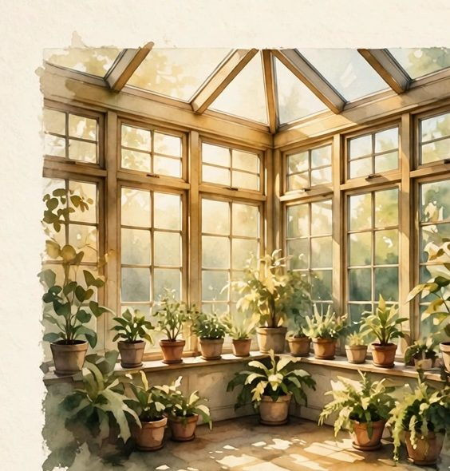
A sunroom in morning light, its glass panes gone gold, plants standing on every sill.
This house keeps many rooms, and it makes no apology for any of them. There are rooms for grief and rooms for work, rooms where the difficult years are stored in their proper order. But at the garden end of the house there is a sunroom, glass on three sides, plants along every sill, and what is kept there is simpler than all the rest: the memories that, years later and without being summoned, still make the citizen smile. Nobody arranged them like an exhibition. They gathered the way light gathers in a bright room, one glad hour at a time, until the room could not help being warm.
A smile at a memory is a modest thing, and this house treats it with unusual respect. It is not an argument about the past. It does not claim that the years were kind, or that the hard rooms are empty, or that anyone should feel otherwise than they do. It is evidence, the way a warm stone is evidence that the sun was out: proof that at least one hour was lived gladly, by someone who is still here to notice. The register keeps these entries in pencil, because a smile cannot be audited, only received, and the Keeper has never once asked a visitor to account for one.
So the tour begins here, in the brightest room, before the house shows anything heavier. Sit down if you like. The chairs are old and the cushions have opinions, and the plants have been watered by several generations of memory. Nothing in this room is instruction. A citizen may look at the kept and sunlit things, smile or not smile, stay an hour or a minute, and leave by the same glass door, carrying nothing heavier than they brought in. That is the whole arrangement, and the Keeper considers it, after long practice, quite enough for one room to offer.
2The Sunroom of the House
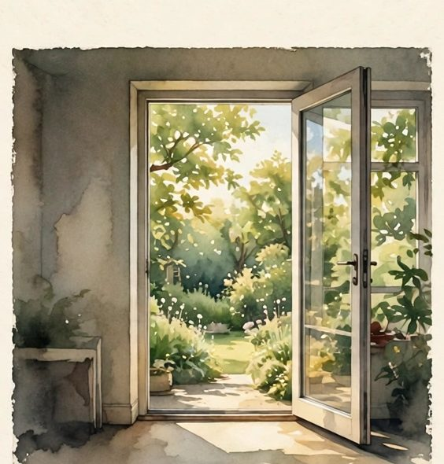
A glass door standing open between a shaded room and a bright garden beyond.
Every house in this estate has one room that explains the rest, and in this house it is the sunroom. It stands at the garden end, where an ordinary house might keep a porch or a lean-to, and it is made mostly of glass: three walls of panes in white-painted frames, a fourth wall shared with the kitchen, and a floor of boards that have gone the colour of weak tea from a century of mornings. It is not the largest room, nor the most private. It is simply the one the light reaches first, and the house has arranged its remembering accordingly.
The sunroom was not built to display anything, and the Keeper resists visitors who treat it as a gallery. Its purpose is keeping. Sunlight is a conservative force in a house: it slows the fading of cushions, discourages damp in the corners, and makes a kept thing last longer than it would in a cellar. Glad memories are kept here for the same reason a household keeps its seedlings on the sill rather than in the dark — not because they are fragile, exactly, but because warmth is their natural climate, and a memory, like a plant, keeps its colour where the light can reach it.
It matters that the sunroom is only one room. Down the corridor are the others — the rooms of work and worry, the room where the unchosen days are filed, the small room nobody opens in company. The sunroom does not argue with any of them. Its glass door stands in the same corridor, and a citizen passes through the whole house to reach it, which is as it should be: the glad memories are not kept in a separate building, under separate management. They belong to the same address, the same roof, the same life. The sun simply gets there earlier, that is all.
3Kept in the Light
Most households keep their past in the dark: in attics, in boxes, in the drawer that sticks. This house keeps its glad memories in the light, on open shelves and sills, where they are seen in passing a dozen times a day. The arrangement is deliberate. A memory kept in the dark must be fetched, and fetching takes an occasion; a memory kept in the light asks for nothing. It simply catches the eye while the citizen is watering the plants or crossing to the kitchen, and for half a second the day is warmer than it was. That half-second is the whole technology of this room.
Keeping is a practice, not a purchase, and the Keeper describes it in verbs. To keep a glad memory in the light is to dust it now and then by telling it, to turn it slightly as the seasons change, to notice when it has faded at the edges and set it where the morning comes in stronger. None of this is work in the heavy sense. It is the same attention a person gives to a plant they are fond of: not constant, not anxious, merely regular. The register records that citizens who tend their glad memories lightly tend, also, to find them easily.
Not everything in the house can live in the light, and the doctrine is plain about it. Some memories are kept in shade because shade is what they need; some rest in closed rooms and are visited rarely and on purpose. The sunroom keeps only what the light suits, and it keeps that without triumph. There is a rota, of a sort: a memory that has sat in the sun a long while may be carried back to a quieter shelf, and one that has rested in the dark for years may be brought out, blinking, to a sill. The house calls this ordinary housekeeping.
4The Keeper of the Sunroom
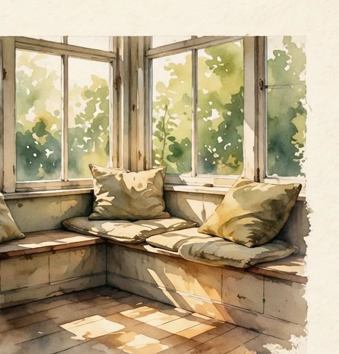
A window seat with worn cushions, the sun pooling on the boards beneath it.
The Keeper of the Sunroom is the least ceremonial official in this house. They keep no uniform beyond a cardigan with pockets, and their instruments are a watering can, a pencil, and a register bound in green cloth. Their duties, as written in the front of that register, are three: to keep the glass clean enough for the light to do its work, to write down what is brought to the sunroom in the citizen's own words, and to return every memory to its owner unchanged. The Keeper has held the post a long time, and the house has never once advertised for a replacement.
What the Keeper does not do is a longer list, and visitors are asked to read it kindly. The Keeper does not cheer anyone up. They do not grade memories, rank them, or suggest that a citizen's glad hour should have been gladder. They never prescribe a visit, never set a quota of smiles, and never, in any entry of the register, use the sunroom as evidence against a citizen's sorrow. If a visitor arrives in a grey mood, the Keeper makes tea and says nothing improving. The register calls this restraint the whole qualification for the post, and it is examined annually, over tea.
If the Keeper has a gift, it is attention. They notice which memory a citizen reaches for first, which one is always passed over, which one has begun, after years of quiet, to make its owner smile in a new way. They write these things down without commentary. Citizens sometimes ask what the Keeper thinks of their collection, and the answer is always the same and always true: that it is a good room, that it is theirs, and that the light this afternoon is particularly fine. Then the Keeper goes back to the watering, and the register dries in the sun.
5A Smile Is Evidence, Not an Argument
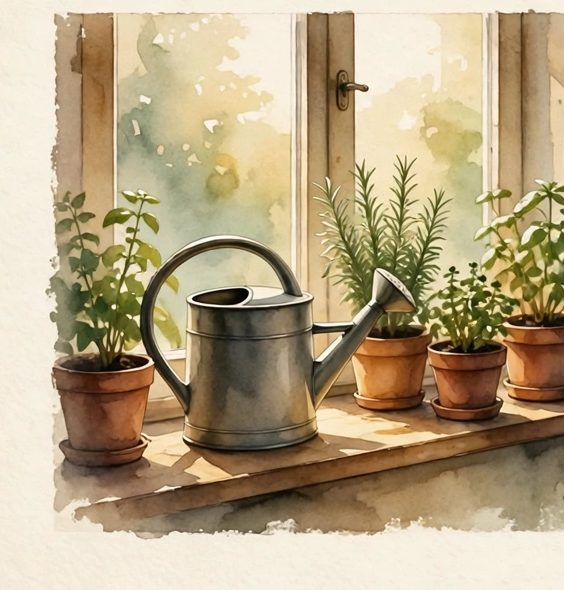
A watering can beside potted herbs on a warm windowsill, the light coming through green.
The first doctrine of this house is written over the sunroom door, in the Keeper's plain hand: a smile is evidence, not an argument. Evidence is a humble thing. It shows that something happened, once, in a particular light. An argument is immodest by comparison — it wants to settle the whole question, to prove the past good or prove it wanting, and to have the verdict stand for every room in the house. A memory that still makes a citizen smile is evidence of exactly one glad hour, honestly come by. This house receives it as such, and asks it to carry no more weight than that.
Arguments are where the trouble starts, and the register keeps a file of them. A glad memory gets carried down the corridor and used as a stick: see, the voice says, it was not so bad, you smiled then, what is your sorrow standing on. Or the sorrow is carried the other way, to darken the sunroom: how can you smile at that year, knowing what else it held. Both errands are forbidden in this house. A memory is not a lawyer. It cannot testify against the other rooms, and the other rooms cannot testify against it. Each keeps its own weather, under its own roof.
Evidence, by contrast, is content to be small. It does not need the past to have been good; it needs only one true thing — a kitchen, a sentence, a Tuesday when the light came through the glass at a certain angle and somebody laughed with their whole face. The Keeper writes such entries in pencil and underlines nothing. Years later the citizen may read the entry and smile again, or may not, and both outcomes are filed without surprise. The evidence has not changed. What has changed is only the weather of the reader, and the house keeps rooms for every weather there is.
6The Glad Rooms Are Also Yours
Visitors are often surprised, the Keeper reports, at how shyly citizens claim their glad rooms. The hard rooms they own without hesitation — those, they say, are mine, I paid for them in full. But the sunroom they enter like guests, half expecting to be asked for credentials, as if the laughing person in the memory were a wealthier relative whose house they are merely watering. This house is firm on the point. The glad rooms are also yours. The citizen who laughed in that kitchen and the citizen who stands in the doorway now are the same tenant, and the deed does not lapse between weathers.
No rent is owed on a glad room, and no qualifications are checked at the door. A citizen does not have to be cheerful to enter, or recovered, or finished with the harder parts of the house; the sunroom is not the prize at the end of a corridor of improvements. It is simply one of the rooms of a life, held on the same terms as the rest. The Keeper has watched citizens stand in the doorway of their own happiest hours like burglars. The register's marginal note on the practice is short: take off your coat. You live here. The light is partly yours.
Ownership here survives absence, which is the kindest clause in the whole deed. A citizen may go years without entering the sunroom — seasons when the corridor is dark and the glass door is simply not on the way to anywhere. The room is not let to anyone else in the meantime. The plants are watered by the Keeper's standing arrangement, the cushions keep their shape, and when the citizen finally comes back, expecting dust and reproach, they find the key turns exactly as it used to. That is what it means, in this house, for a glad room to be yours.
7Nobody Is Asked to Perform Gladness
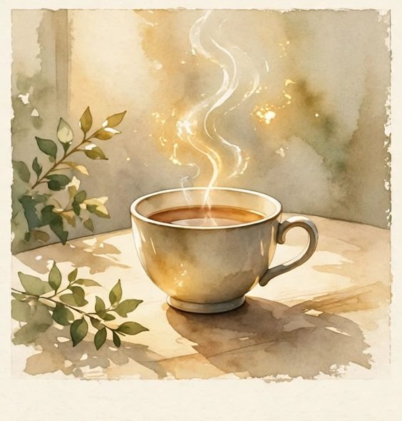
A teacup on a sunroom table, its steam rising lit gold in the still air.
The sunroom door stands open, and this house is exact about what an open door means. It is an invitation, not an obligation. Nobody is asked to perform gladness here — not for the Keeper, not for other visitors, not for the sake of the room itself. Forced cheer is the one article this house does not stock, and the register is blunt about why: a performance is a debt, and the citizen who smiles on demand leaves poorer than they arrived. The gladness in this room is real precisely because none of it is owed. The door opens; that is the entire policy.
A citizen may therefore sit in the sunroom in any weather of their own. They may bring a grief in with them, and set it down by the chair like a wet coat, and look at the glad shelves with dry eyes. Nothing in the room will object. The plants do not perform for an audience; they simply stand in the light, and a visitor is granted the same arrangement. The Keeper has a phrase for this in the register: the room is company, not curriculum. It keeps a citizen company the way a window does — by being there, brightly, without a syllabus.
The register keeps no record of who smiled. This surprises visitors who expect the sunroom, like every bright institution, to keep attendance and measure outcomes. The Keeper's book has columns for what was brought and what was said, and none for what was felt. A citizen's face in this room is their own property, uninspected. Some of the longest visits in the register were made by citizens who never smiled once, and sat the whole hour looking out at the garden, and left, by every account including their own, better for it — though the house is careful even there, and records simply: visited. Sat. Went home.
8Small Memories, Load-Bearing
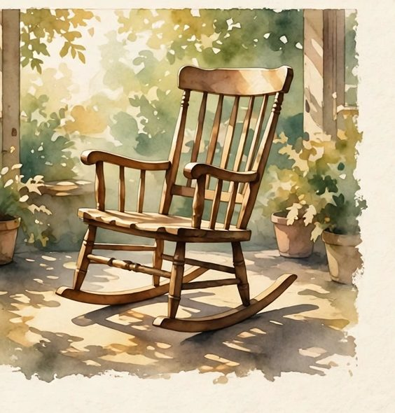
A rocking chair resting in a patch of afternoon sun, the boards bright around it.
A new visitor, expecting monuments, is sometimes disappointed by the sunroom's collection. There are very few grand occasions on its shelves. What the room mostly holds is small: a kitchen with the radio on, a sentence somebody said in a doorway, a Tuesday in June when nothing happened except that everything was briefly, inexplicably fine. The Keeper makes no apology for the scale. A teacup, the register notes, holds as much light as a window; it is only a smaller vessel, and smaller vessels are the ones a household actually uses every day. The grand occasions are kept elsewhere, and dusted less.
Small, in this house, is not a synonym for slight. The Keeper, who has some carpentry in their past, points out that a house is held up mostly by small members: pegs, nails, the short beams over doorways that nobody notices until one is removed. Glad memories work the same way in a life. The big days carry the roof, perhaps, but it is the small kept kindnesses and ordinary shining hours that carry the citizen's quiet opinion of their own past — and that opinion, the register observes, is what a person actually lives inside, day by ordinary day.
So the sunroom declines to rank its holdings by size, and the Keeper weighs them, if at all, by warmth. A memory of a whole summer may sit on the shelf beside a memory of a single sentence, and neither is asked to give up its place to the other. Citizens are sometimes apologetic about bringing small things to be kept — it is only this, they say, it is hardly anything. The register answers for the Keeper, in the margin, in pencil: only this is what the room is for. The load-bearing things in a life were never the large ones alone.
9A Visit, Not a Verdict
This house asks its visitors to hold one distinction gently, and it is this: a smile at a memory is a visit, not a verdict. A visit is a small, civilised arrangement. You go to the past the way you go to a house where you once lived — you knock, you are let in, you sit in the room that is offered. You do not, in the course of a visit, revalue the whole property. A verdict does that: it sums, it judges, it closes the file. The sunroom keeps its door open for visits. Verdicts are transacted elsewhere, in rooms with harder chairs.
The distinction protects the smile from an impossible job. If every glad memory had to stand as a verdict — proof that the year was good, the marriage sound, the childhood happy — then every glad memory would fail under examination, because years are mixed and childhoods are long. Citizens would stop trusting their own smiles, and the register shows that some, examined too hard, already have. But a visit asks nothing of the kind. The memory was pleasant to be in. That is the complete finding. A citizen may visit the same room a hundred times and bring back nothing but that, and it is enough.
Visiting has its manners, and the Keeper keeps them light. A visitor does not rearrange the furniture of the past, does not stay so long that the present starts to knock, and does not apologise for leaving. The visit ends; the citizen comes back down the corridor to their actual day, which is where their life, on the whole, prefers to be lived. What they carry out of the sunroom is not a conclusion. It is the small warmth of having been somewhere kind, recently — the way a person comes in from a garden in the evening, smelling faintly of leaves.
10Ripened Slowly
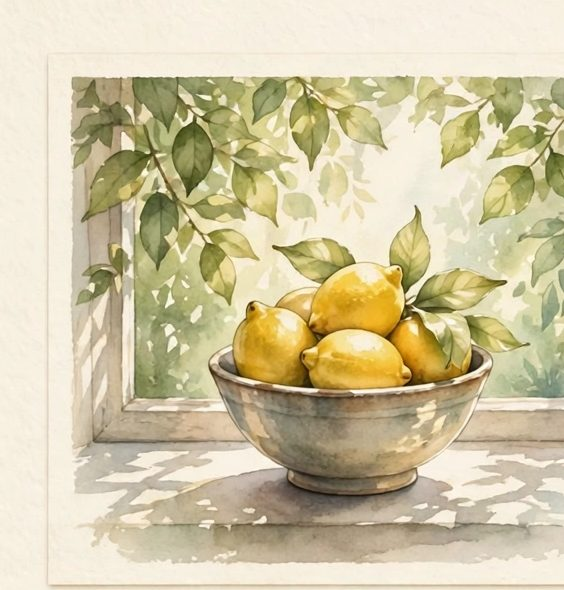
A bowl of lemons on a sill, the light coming through green leaves behind the glass.
Not every glad memory arrives glad. Some are picked too early, like fruit taken off the tree by an impatient hand, and taste of nothing but green. This house has a doctrine for them, and it is patience: a memory can ripen in the dark, like fruit in a drawer, and be sweet when it is finally opened. The day that seemed merely ordinary — merely a day — comes back years later with its flavour developed, and the citizen, astonished, smiles at an afternoon they would have traded away at the time. The register has a whole shelf of such late entries, and it grows longer every year.
Ripening is not forgetting, and it is not forgiving, and the house is careful to keep the three apart. Nothing about the day changes in the drawer. The same words were said, the same weather stood over the garden. What changes is the citizen, slowly, at the speed of living: other rooms get furnished, other years accumulate, and one morning the memory is reached for and found, to everyone's surprise, to have become kind. The joke that took a decade to become funny is a standard entry. The register files it without triumph, under the heading the Keeper prefers: late, not lost.
The Keeper's advice about unripe memories is the advice of every good gardener: do not force the drawer. A memory shaken daily to see if it is sweet yet will only bruise. Leave it in the dark among the linen, among the ordinary years, and let time do the slow chemistry it does without supervision. Some entries, the register admits, never ripen, and those are returned to their rooms without ceremony — ripening is a possibility here, not a promise. But enough of them sweeten, year by year, that the Keeper keeps the drawer, and checks it, gently, whenever a citizen happens to be passing with their hands free.
11The Door Stands Open
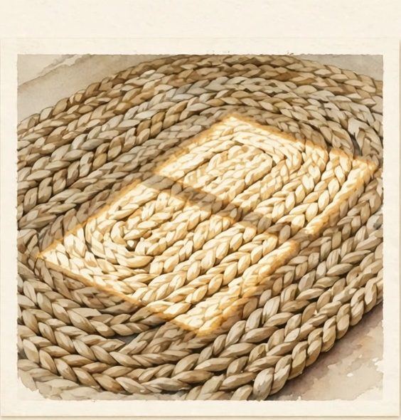
A braided rug holding a bright rectangle of sun, the boards warm around its edges.
The sunroom door is the only door in this house that is never locked. It has a key — the register is not sentimental about security — but the key lives in the lock, on the inside, and the door stands open or ajar at every hour the house keeps. A citizen may come at dawn with a new memory still warm, or at midnight with an old one that has suddenly ripened, and find the same entry: no bell, no appointment, no explaining themselves to a desk. The Keeper considers the open door the house's shortest doctrine. Everything else in this hall is commentary.
An open door, the Keeper insists, is not a summons. The house does not send for anyone. There are no notices slipped under the doors of the harder rooms suggesting that a visit is overdue, no gentle campaigns, no meaningful looks from the Keeper in the corridor. Citizens who never come are not discussed; citizens who come daily are not congratulated. The door's openness is a standing condition, like the light's — it does not improve when it is used and it is not wasted when it is not. This restraint is what makes the room trustworthy, and the register underlines it twice.
The Keeper's last task of the evening rounds is the door. The plants are checked, the register is closed, the cups are washed, and then the Keeper walks the corridor and sets the sunroom door the way it must be for the night: open, with the lamp off, and the last of the day's light lying in a long panel across the boards. Nobody will come in the night, probably. The house keeps the arrangement anyway, on principle, the way a lighthouse is lit for ships that are probably not there. The register's word for it, entered nightly, is simply: ready.
12The First Rule of the Sunroom
Every room in this house has rules, and the sunroom, for all its softness, has one that stands first and holds the rest upright. It is this: nothing smiled at here may be used as a weapon. Not against the hard rooms, whose sorrows are not refuted by an hour of sun. Not against another citizen's memory of the same day, which may have entirely different weather. And not — this is the clause most often read twice — against one's own grief on a later date, as if having smiled once were a debt that sorrow must repay. The Keeper states it at the door, once, without emphasis.
The rule is first because without it the whole room quietly changes trade. A sunroom used for evidence in disputes becomes an annex of the courtroom down the corridor, and its citizens begin to curate their gladness the way witnesses prepare testimony — defensively, and with an eye on the other side. Smiles dry up under such management; the register has watched it happen in houses less careful than this one. With the rule kept, the opposite occurs. A memory that cannot be conscripted can simply be enjoyed, and enjoyment, unlike evidence, asks for no guard, no escort, and no locked door at night.
The rule is not posted. Visitors sometimes look for it on the wall, expecting the house's usual carpentry of signs, and find only glass, a sill of plants, and the light doing what it does. The Keeper keeps the rule the way the rule asks to be kept: in practice. It is stated once, at the door, in an ordinary voice, and thereafter it is simply how the room behaves — the way a good host's rule about coats and muddy boots is nowhere written and everywhere in force. Beneath all the other doctrines of this hall, the register notes, that one sentence is doing the holding.
13The Faces That Come Back Smiling
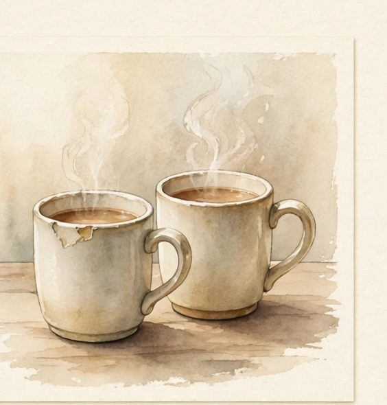
Two mugs side by side on a table, one chipped, steam rising from both.
The second hall of the sunroom is given to faces. Not portraits — the house has a portrait gallery elsewhere, with its frames and its formality — but faces as memory actually keeps them: unposed, mid-sentence, caught in the light of a particular afternoon. A citizen entering this hall is met, the register says, the way one is met in a familiar kitchen: by people already laughing at something said a moment before the citizen arrived. The entries here are not the solemn faces of record. They are the faces that come back smiling, and they come back so reliably that the Keeper keeps their shelf nearest the door.
It would be pleasant to report that these faces smile because their owners were happy people in happy times, and the register declines to report it, because it is not true. Some of the faces on this shelf belonged to citizens of famously difficult weather. Memory is not obliged to be a fair historian, and in this hall it is not trying to be. It keeps the moment the face was lit — by a joke, by a kindness, by the sun coming through a window at the right minute — and it keeps that moment the way a household keeps the good photograph, not the whole archive.
None of this is falsification, and the house has a short answer for citizens who worry that it might be. The frown was real too, and it is kept elsewhere, in the rooms fitted for it. This hall does not claim the smile was the whole person; it claims only that the smile happened, and that the citizen is allowed to be met by it first. The Keeper's own view, entered in the margin and never argued, is that the faces come back smiling because they are glad to be remembered at all — and that the citizen, most days, is glad of exactly the same thing.
14A Laugh Remembered Whole
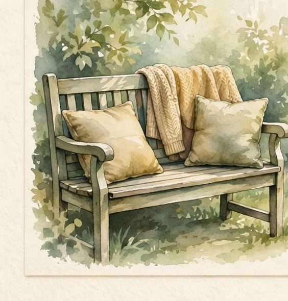
A garden bench with two cushions and a forgotten cardigan over its back, in late light.
Of all the entries in this hall, the laugh is the strangest kept thing, because it is not an image at all. A citizen does not remember a laugh the way they remember a face, in outline and colour. They remember it whole, in the ear: the exact pitch of it, where it caught, where it broke into the helpless part that no one can perform on purpose. The Keeper has listened to many citizens attempt descriptions and fail, cheerfully, every time. A laugh, the register concludes, is not stored. It is kept the way a bell keeps its note — by being struck, briefly, whenever the memory is touched.
A person's laugh is the least guarded thing about them, and this hall treats it accordingly. Faces can be arranged, sentences can be rehearsed, but the laugh arrives before the management does, and so the remembered laugh is often the truest signature a person leaves in someone else's keeping. Citizens are sometimes startled by the force of it — a laugh twenty years gone, heard again in the middle of an ordinary morning, can stop a person at the sink with the tap running. The Keeper records these events without alarm. Being stopped by gladness is not an emergency. The tap can wait.
The register cannot record a sound, and the Keeper is honest about the limitation. What the book holds is the citizen's report: whose laugh, what room, what foolishness set it off, and whether it still works. Oddly often, the venue is remembered as clearly as the laugh — the garden bench, the kitchen doorway, the back seat of a car on a road that no longer exists in the same shape. The house advises citizens to keep the venue with the laugh. A bench is easier to revisit than a sound, and a surprising number of these entries, revisited, strike the bell again.
15The Friend Who Knew the Way
Every sunroom keeps one entry that is not a place or a thing but a person with a talent: the friend who knew the way. The way to the river through the field where the path was not marked. The way through a bad year, which they had walked before and described without decoration. The way, on the smallest and most useful occasions, to the citizen's own better temper — which this friend could find in the dark, by landmarks nobody else had noticed. The register does not call such people wise. It records the simpler fact: when they were there, nobody was lost.
What distinguishes this friend, in the entries, is that they never made a profession of guiding. There was no system, no doctrine, no talk of journeys. They simply went first, at their own pace, and looked back at the right intervals to check the citizen was still coming. Half the directions they ever gave were a single sentence — this way, mind the root, nearly there. The house has thought about this and reached a conclusion it is pleased with: the friend knew the way because they had been lost in most of the same places, and had kept the map they made of it, and lent it without being asked.
Citizens ask, sometimes, what is owed for such guidance, and the register's answer is a relief to read: it was settled at the time, in the currency of the time, which was company. What remains is only the remembering. And the remembering, in this hall, is itself a kind of following — the citizen walks the old path again in the mind, at the old pace, looking for the root they were once warned about, and finds, arriving at the memory's end, that they are smiling. The Keeper files this under the hall's plain arithmetic: a way once learned is never entirely lost, and neither is the friend.
The Sunroom Desk
One desk receives all correspondence for this house — questions, corrections, and word of any memory that still makes you smile: a face, a place, a kindness received, a mishap that turned kind. It is read in the order it arrives.
16A Grandmother's Laugh
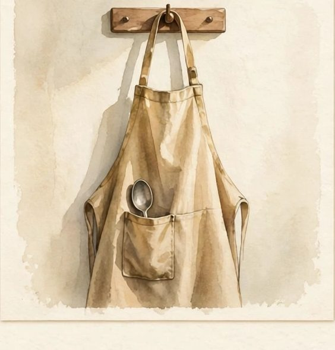
An apron hanging on a hook in kind light, a spoon kept in its pocket.
In many citizens' sunrooms the largest single entry is a grandmother's laugh, and the Keeper has stopped being surprised by the acreage it takes up. It was rarely a small sound. It had jurisdiction over a whole kitchen. It could be set off by a grandfather's story told for the fortieth time, by a child's solemn pronouncement, by nothing that anyone else in the room could identify — and once started, it reorganised the afternoon. Work stopped. The kettle was put on as if in celebration. Whatever the day had been about before the laugh, it was now about the laugh, and everyone was included.
The register notes what such a laugh licensed, because a laugh of that size is never only a sound. Under its government, small mischiefs were pardoned before they were finished being committed. Second helpings were not a request but a forecast. A child could fail at something in that kitchen — burn the toast, spill the flour, mispronounce the long word — and be met first with the laugh and only afterwards, gently, with the lesson, which is an order of operations this house formally recommends. The laugh said, in the only language that needed no translation: this house is governed kindly, and you are safe in it.
The laugh survives its owner, which the register records as plain fact rather than mystery. It survives because it was practised at such volume, in such company, for so many years, that a dozen memories hold a copy each. Citizens report hearing it arrive in their own throats, uninvited, at their own kitchen tables, when a grandchild does something solemn — and report, too, the brief vertigo of it, being for one second both the child in the memory and the grandmother. The Keeper files these reports without surprise. Some entries in this hall are not visited. They are inherited, and they keep their jurisdiction.
17The Teacher Who Winked
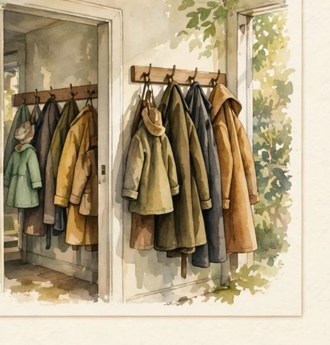
A doorway with coats of many sizes on its hooks, a house full of arrivals.
School is kept, in most memories, in a colder building than this one, and yet the sunroom holds a school entry that citizens bring with particular care: the teacher who winked. The wink was a small act of treason against the whole apparatus of the classroom, committed in the citizen's favour. It said, in the space of an eyelid, several things no lesson ever managed: I see you. I know exactly what you did, or what you are thinking of doing. The rule stands, but the rule is not the whole of the law, and on this occasion mercy has the casting vote.
The curriculum of that year is mostly gone, and the register does not pretend otherwise. Sums, dates, the names of rivers — filed in the cold rooms, consulted rarely. What the citizen kept from the whole year of sitting still is the wink, because the wink was the year's real syllabus: it taught that institutions are staffed by people, that authority can have a face and use it kindly, and that being seen accurately by a powerful person is not always a danger. Some citizens, the Keeper notes, organise their entire later conduct toward the young on the strength of that one eyelid. Larger educations have been built on less.
Time has, of course, promoted the citizen. They stand now where the teacher stood, in rooms where they are the authority, with the rule in their hand and a child in front of them doing something that requires a decision. The register has a fond category for what happens next, reported often enough to be a pattern: at the critical moment, the citizen feels one of their own eyelids become briefly, deliberately unreliable. Nothing is said. The lesson proceeds. But somewhere in the room a small person has just been let in on the great secret — and the entry in this hall is, at that moment, renewed for another generation.
18The Stranger Who Joined In
Among the faces in this hall, one has no name attached, and the Keeper would not have it otherwise: the stranger who joined in. Every citizen seems to keep one. The game in the park that was short of players. The song in the railway carriage that needed a second voice and got one, from the corner seat, without introduction. The snowball engagement that began between households and ended, by the stranger's cheerful diplomacy, as a general peace with hot drinks. Their qualification was never skill. It was willingness, arriving exactly when willingness was the one thing the occasion lacked.
The art of the stranger, as the register reconstructs it from many entries, is a delicate one: to enlarge an occasion without annexing it. They did not take over the game, or correct the song, or stay to be thanked at length. They contributed the missing player, the missing voice, the missing nerve — and then, at the natural seam of the thing, they resumed being a stranger, with a wave that asked for nothing. Citizens often say they meant to learn the name and did not. The Keeper's margin is gentle on the point: the not-learning was part of the arrangement, and both parties, probably, understood it.
The house keeps the stranger in this hall, among the faces, as a matter of doctrine. A life, the register observes, is not furnished only by the people who stayed. Some of its gladness was delivered by passers-by, in passing, at the exact weight a passer-by can carry — an hour, an afternoon, once a whole summer — and the citizen's smile, meeting the entry years later, is partly gratitude and partly recognition: that they themselves have since been the stranger in other people's entries, joining in, waving, resuming. The hall is large because the traffic through it, in both directions, never really stops.
19Someone Is Still Telling That Story
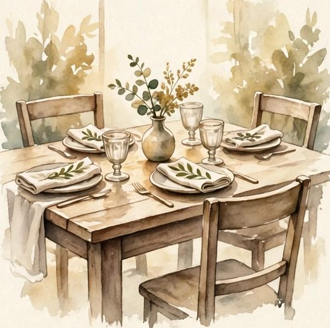
A table set for guests in warm light, one extra chair pulled up close.
The Keeper keeps a small, amused file on stories that refuse to stay home. Every citizen has one: the afternoon that became, in the telling, a permanent fixture of some family's or some company's conversation, so that years later the citizen hears of it from an unexpected direction — told by a cousin to a stranger, quoted by a colleague who was not there, arriving at a wedding in its formal clothes. Someone is still telling that story. The event itself is long finished. The story has employment, and references, and shows no sign of retiring to be merely remembered.
The citizen's relation to such a story is complicated, and the register records it with sympathy. The facts have drifted, as facts do when they are carried by many hands; the part where the citizen was brave has grown, and the part where they were lucky has been quietly reassigned. Corrections are possible but pointless, and mostly not attempted. A story that is still being told belongs, by the house's law, to its tellers. The citizen retains only the original afternoon, which is smaller than the story now, and truer, and kept here in the sunroom where the two of them can be visited separately.
And yet the smile, when the story comes home on one of its visits, is genuine and the Keeper does not analyse it. To have given the world one durable piece of foolishness or courage — one afternoon that other people find worth the breath, decades on — is a modest form of permanence, and this hall is fond of modest forms. The register closes the file with the only instruction it ever gives in this hall: if you meet the story out in the world, being told by someone who never met you, do not interrupt it. Buy it a drink, if drinks are going. It is working.
20The Face Across the Table
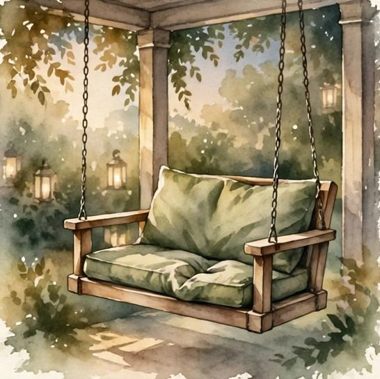
A porch swing hanging still in evening light, one cushion dented where someone sat.
Of all the faces in this hall, the Keeper expects the plainest one to be the most visited: the face across the table. It is not the face of the great occasions, dressed and posed. It is the face as seen across ten thousand ordinary meals — looking up from a plate, from a newspaper, from the middle distance of a thought — at the distance of a table's width, which is the standard unit, this house maintains, at which a shared life is actually conducted. Other faces are remembered from events. This one is remembered from Tuesdays, and it outnumbers all the others together.
What the citizen keeps of this face is mostly angle and timing. The look up, when a sentence lands. The pause before the answer, in which the whole marriage, or friendship, or long alliance of the table, can be read by someone who has learned the language. The expression worn while listening to a story told too often, arranged kindly. None of it would photograph well, and the register says so with respect: this is a face that exists in duration, not in instants, and memory has had to develop a special shelf for it, wider than the others, and kept at sitting height.
The smile this entry produces is the quietest in the hall, and the Keeper treats it with corresponding care. It does not arrive with a story attached; there is nothing to tell. It arrives with the citizen's morning coffee, at their own table, in the ordinary light — the sense of an arrangement that held: two chairs, one table, a face that looked up. Where the chair across is now empty, the house does not pretend otherwise, and keeps the harder record in its proper room. But the angle remains in this one, and at the angle, faithfully kept, the face still looks up.
21Gone, and Still Funny
There are citizens in the register whose names are spoken now only in the past tense, and yet the mention of them still begins, more often than not, with a laugh. This is not forgetfulness dressed up. The grief has its own room in the house, and it is kept swept and honest. But the person who is gone was funny in life — deliberately, professionally funny, the kind who timed a sentence the way a mason sets a stone — and the memory has stayed loyal to the fact. The laugh arrives first because that is how they would have entered the room.
The Keeper keeps a short list of these: the uncle who could imitate the kettle, the friend whose account of a disastrous holiday improved at every telling until strangers were requesting it. None of it is recorded anywhere but in the citizens who carry it, and the register notes the risk in that. A laugh remembered is a perishable good. It survives only by being told, and telling it is the one form of preservation this house trusts — not sealed in glass, not framed, but passed hand to hand like a warm cup. The sunroom keeps what the shelf cannot.
What has changed, the register observes, is the weight of it. In the first years the laugh was followed by a drop, the way a stair is missing where the foot expects it. Later the drop grew shallower. What remains now is the laugh itself, arriving clean, and something after it that is quieter than grief and warmer than peace — closer, perhaps, to gratitude, though gratitude is too formal a word for a kitchen table at midnight. The person is gone. The funny is not. The house holds both facts without asking either to yield.
22What Their Smile Permits
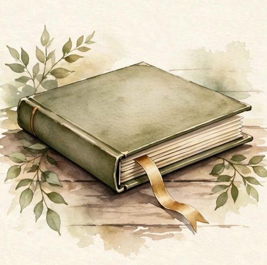
A photograph album closed on a table, a ribbon marking the page, its pictures kept unseen.
Some smiles in the register are not greetings but grants. A grandmother's smile across a kitchen, arriving at exactly the moment a child had done something unscheduled with the good scissors, could function as a pardon issued before the crime was even confessed. It did not excuse everything. It excused the attempt. The citizen who grew up under such a smile carries the permit still, folded somewhere behind the ribs, and produces it now in rooms the grandmother never saw — before the risk, before the letter, before the door that might not open.
A smile remembered can permit the opposite as well. There are days when the citizen does not smile back at all, and feels the old weather move through the house, and the memory of that kitchen grants permission for this too. The permit was never for cheerfulness. It was for honesty at close range — the right to be found, by someone who loved you, in whatever state you were actually in. That is why the sunroom keeps these smiles in a separate drawer of the desk. They are not decorations. They are documents, and they are still in force.
The album on the table stays closed, its ribbon at the page everybody knows by heart, and the Keeper is in no hurry to open it. The picture is not the permit. The picture only shows faces arranged for a camera; the smile that mattered happened off the record, in the kitchen, in the middle of an ordinary Tuesday. What their smile permits, in the end, is the citizen's own: an unguarded one, offered now to children mid-catastrophe and to friends mid-confession, issued early, before the apology is finished, in the hope that it lands the way it once landed here.
23Remembered in Mid-Laugh
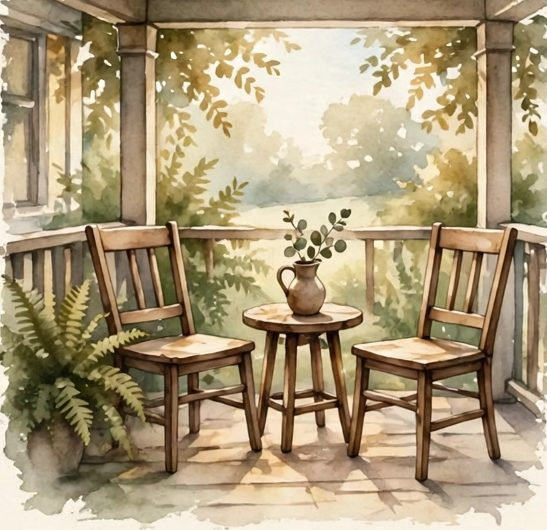
A porch with two chairs turned toward each other, a small table between them, evening coming on.
The register notes a mercy in how memory takes its pictures. It rarely keeps the formal portrait — the arranged face, the held breath, the smile produced for the lens and already tired. What it keeps, unbidden and in perfect focus, is the person caught mid-laugh: head tipped, eyes nearly shut, one hand lifted as if to wave the joke away and only encouraging it. No one arranged that expression. It could not be repeated on request. And yet it is the most exact likeness the house owns, truer than any photograph, and it surfaces whole at the smallest excuse.
The two chairs on the porch still face each other, and the small table between them has heard, by the register's estimate, several thousand punch lines and at least as many beginnings that never reached one. This is where the mid-laugh portraits were taken, though no camera attended. A porch at evening lowers the standard of performance to nearly nothing. Stories slow down. The second cup goes cold, unremarked. And in that unguarded hour the faces did what faces do when nobody is asking anything of them, and memory, passing with its tray, quietly kept the best of it.
It is worth recording that the same laugh is remembered differently by the two chairs. One citizen keeps the joke; the other has lost the joke entirely and keeps only the sound, and both accounts are filed without correction. The house does not require the story to survive for the laugh to remain legal tender. Sometimes, meeting now in older bodies, the two of them arrive at the porch story from opposite ends and laugh again at the gap between their versions — which is, the Keeper suspects, the laugh ripening a second time, in company, exactly as it should.
24The Faces Are Not Posed
The posed face is a treaty between the sitter and the future: hold this expression, and the years will be told you were composed. The sunroom has no quarrel with the treaty. Weddings and graduations run on it. But the faces filed in this hall are the ones that broke the treaty mid-signature — caught turning toward a voice, caught listening, caught with the laugh already started or the thought still arriving. They were not arranged for the future at all, and so the future trusts them completely, the way you trust a letter never meant to be read aloud.
The Keeper has observed that citizens apologize for these faces, and the apology is always the same shape: it is not a good picture of them. By the standards of the studio this is true. The chin is doing something unofficial. But the register files by a different standard. A good picture of a person, in this house, is the one their grandchildren will use to prove they were alive in the full sense — awake, interrupted, mid-something. The posed face proves presence. The unposed one proves occupancy, and occupancy is what the sunroom is for.
There is a practical instruction buried in this hall, and the register delivers it without ceremony: do not delete the unposed ones. Storage is cheap and regret is not. The blurred photograph of the kitchen in full uproar, the face turned three-quarters away and laughing at something outside the frame — these are the load-bearing walls of the glad archive. Keep the portraits too; the house has room. But when the citizen is old and sorting, it is the unposed faces that will stop the hand, and start the smile, and be believed.
25The Summer I Was Nine
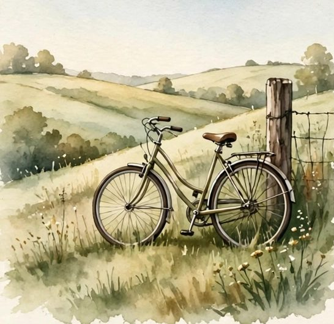
A bicycle leaning by a fence at the top of a grassy hill, the whole summer below it.
Every citizen in the register has one summer that holds office above the others, and for this one it is the summer of being nine. Nine is a specific country. The citizen was old enough to be sent on errands of real consequence and young enough for the errand to be an expedition; tall enough for the fence, small enough to be paid in plums. The days of that summer are not remembered in order. They are remembered the way the sunroom holds light — all at once, and stronger in some corners than others.
The bicycle leaned by the fence at the top of the hill was, that summer, the citizen's entire ministry of transport. It extended the known world by a measurable margin: to the shop, to the river path, to the far gate and, on one documented occasion, beyond it. The hill was the border of the arrangement. From its top the whole valley of permission was visible, and the ride down was the first experience the register can find of speed that belonged entirely to the citizen — unearned by engine, unbothered by timetable, paid for in climbing.
The register is careful with this summer, because it would be easy to gild it, and gilding is a form of loss. There were scrapes that summer, and injustices, and at least one long afternoon of being nine and inconsolable. They are filed too. But the smile belongs to the proportion: a season in which the world was exactly the size of the citizen's legs and curiosity, and both were in daily use. The sunroom keeps the summer not as a verdict on childhood, but as proof of scale — evidence that gladness once fit entirely inside a single season, and can again.
26A Bicycle, a Hill, No Hands
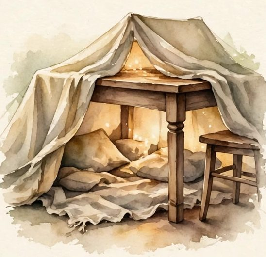
A blanket tent under a kitchen table, a warm glow inside it, supper postponed by exploration.
The register keeps the descent in a separate folder from the rest of the summer, because it was not recreation; it was a demonstration. To ride the hill with no hands was to conduct, at nine years old, a public experiment in trust: the machine knew the way, the road was straight, and the citizen's whole task was to refrain from helping. The arms came up slowly, the way flags are raised. Witnesses were present and have confirmed the account many times, improving it only in the number of witnesses, which has grown with the years.
What the experiment proved has never been entirely clear, and the Keeper counts that among its virtues. It did not prove the citizen brave, exactly; the hill was kind and the road was empty. It proved something quieter: that balance is not held but allowed, that the straightest line down was achieved precisely when the hands stopped arguing with it. The register notes that citizens spend decades relearning this on larger hills, with heavier machines, in weather. At nine it took one summer afternoon, and the lesson went in through the palms.
The same summer had its indoor expeditions, and the register files them together deliberately: the blanket tent under the kitchen table, provisioned with biscuits and a flashlight, explored by citizens who had summited the hill at noon and needed, by supper, a frontier with a roof. The scale changed; the seriousness did not. That is the summer's real bequest, the Keeper believes. Not the bicycle, not the tent, but the discovery that the world — outdoor and indoor, uphill and under-table — was offering adventure at exactly the citizen's size, and would keep doing so, in different sizes, for years.
27The Hideout That Held
Every childhood files one address that was never written down: the hideout. In this register it was a structure of uncertain engineering — part hedge, part shed-side, part pure declaration — and its address was known to exactly the right number of people, which is to say slightly too many, and yet it held. That is the marvel the title records. Hideouts are betrayed by weather, by growth, by older siblings with maps. This one survived a whole era of childhood, and the register treats its survival as a kind of civic achievement.
Its purpose is usually misstated by adults, who assume a hideout is for hiding. The register corrects them. The hideout was a jurisdiction. Inside it, the citizens were governed by their own rules, which were strict about snacks, absolute about knocking — a form of knocking had been devised for a door that did not exist — and silent on the subject of bedtime. Nothing of consequence was ever decided there, and that was the consequence. It was the first room the citizen ever kept, and the sunroom, the Keeper notes, is its direct descendant.
The site itself has been redeveloped by time: the hedge thickened, the shed repainted, the gap at child height grown shut like a healed cut. The citizen passes it now at adult height and does not stop, because stopping would require explaining to no one in particular why this corner of an ordinary garden is a listed building. The register lists it anyway. Some rooms a citizen keeps forever precisely by never entering them again. The hideout held then. In the only archive that matters here, it holds still, unvisited and entire.
28Rain Through a Tent Roof
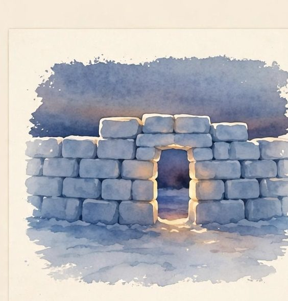
A snow fort wall of snow blocks with a low doorway, dusk settling blue on the white.
The rain arrived the way it arrives in all the best camping stories: after the tent was up, after the fire was lit, after someone had used the word waterproof in a tone of complete confidence. It came through the roof in a fine, patient mist at first, then in single, well-aimed drops, each one landing on something the citizens had been keeping dry. The register has read many accounts of that night and notes that no two agree on the hour, the place, or whose fault the roof was. All agree on the sound.
By the standards of comfort the night was a failure, and the register files it under failures without hesitation. The sleeping bags were damp by design of the sky. The biscuits surrendered early. And yet the account has been improving in the citizen's custody for decades, the way wine is said to improve in a cellar, except that the cellar is a kitchen table and the wine is a story told at it. This is the ripening the doctrine describes. The rain has not changed. The tent has not changed. The listener the citizen has become can finally hear the night correctly: as music with weather in it.
The Keeper is strict on one point: the memory is not permitted to rewrite the night. The citizens were wet, and cold in the specific way of wet socks, and somebody cried a little and has since been granted the register's full amnesty on the matter. The smile does not edit any of that out. It sits on top of the facts the way sun sits on a wet field the morning after — not denying the rain, just outlasting it. Years later the same citizens would build a snow fort with a low doorway and hold it against the whole winter, and the register files the two structures side by side: canvas and snow, both temporary, both — against every reasonable forecast — still standing.
29The Allowance Spent in One Hour
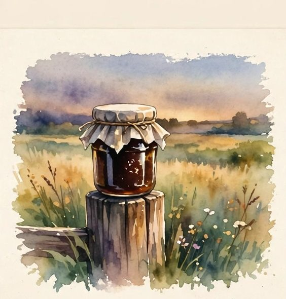
A jam jar on a fence post at dusk, a summer field behind it, the day nearly spent.
The allowance arrived with the weight of a state budget and was spent, on the documented occasion, in under one hour. The register has examined the accounts. There was no fraud and no regret worth the name — only a nine-year-old conducting monetary policy at the speed of appetite: sweets in two categories, a comic, a fizzy drink still remembered by flavor, and one small object of no use whatsoever, which the citizen guarded for a year. The hour has outlasted nearly every careful purchase of the adult decades. The register draws the obvious conclusion and underlines it twice.
Childhood had its own treasury department, and it dealt in jam jars and returns. The jar on the fence post at dusk — empty by then, rinsed, catching the last light — belonged to the same economy as the allowance: small sums, completely serious. Nothing was saved, because saving had not yet been explained as a virtue, and the register, reviewing the policy from a distance of decades, declines to condemn it. A budget spent entirely on one bright hour is not a failed budget. It is a budget that knew what it was for.
The citizen has since signed for sums that would have bought the sweetshop outright, building included, and remembers almost none of those transactions. The hour remains itemized. This is the evidence the sunroom exists to file: memory is not an accountant and does not keep what was largest. It keeps what was brightest, and brightness has its own arithmetic — one hour, fully spent, in a summer when the citizen's whole fortune fit in a pocket and the pocket had a hole in it, which the register mentions because the hole, too, is remembered fondly.
30A Snow Fort With Two Rooms
The fort had two rooms because the citizens had reached the age of floor plans. One room was the hall, where visitors — there were no visitors, but protocol is protocol — would be received. The other was the strong room, where the snowball reserve was kept under conditions of strict secrecy that fooled no one, the garrison being also the entire opposing force. Construction took a full day of the short winter light. The register has inspected the record and found the engineering ambitious, the mortar honest, and the roof, in both rooms, left defiantly open to the sky.
What the adult citizen remembers first is not the architecture but the cost of it, paid gladly in installments: knees soaked through by noon, mittens frozen into small boards by two, the particular silence of a garden under snow at the hour when the lamps come on. The fort stood at the end of the garden like a rumor of a castle. From the kitchen window it looked, the citizens agreed, entirely defensible. That it would melt was known and not discussed. Some buildings are not diminished by their deadline. They are concentrated by it.
The thaw took it in the end, politely, over a week of dripping. The citizens watched the strong room subside into the hall and the hall into the lawn, and the register notes there was no mourning parade. It had done its work in the building, not the standing. This is why the fort is filed in the sunroom rather than the archive of losses: it is one of the earliest proofs the citizen owns that a thing can be temporary and complete at the same time, and that two rooms of snow, occupied seriously for one winter, are not a draft of a house. They are a house.
The Sunroom Desk
One desk receives all correspondence for this house — questions, corrections, and word of any memory that still makes you smile: a face, a place, a kindness received, a mishap that turned kind. It is read in the order it arrives.
31The Dog Who Knew the Way Home
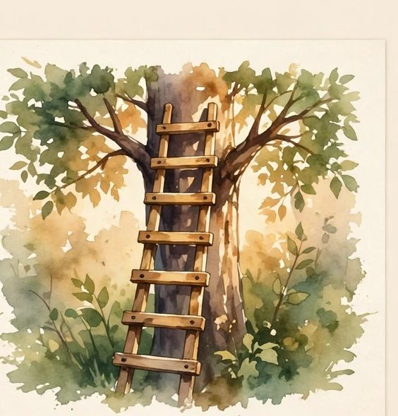
A treehouse ladder nailed up a trunk, the boards golden in late light, the way home below.
The dog's contribution to the citizen's education has never been properly credited. The dog knew the way home from every point of the known world — from the far gate, from the river path, from the street of the friend whose mother kept biscuits — and conducted the citizen back along it with the patience of a guide who is paid in affection and accepts the currency. To follow the dog was to learn the geography of home as a felt thing: not a map, but a gradient, a slope in the world that ran, from everywhere, toward the kitchen door.
The dog also knew things the register can only file under mysteries of the profession: which neighbor was a biscuit risk and which was a biscuit certainty, when a walk was truly over, and where, under the tree with the ladder nailed up its trunk, a dog should wait while citizens conducted affairs in the branches. The waiting was done properly, chin on paws, in the posture of an ambassador who expects the talks to succeed. Looking down through the golden boards, the citizen learned the second geography: home is also the one who waits at the bottom of it.
The dog has been gone for the length of several adult lives of dogs, and the register does not pretend otherwise. The house keeps the harder room furnished. But this hall is for what the dog left running: the citizen still navigates by that early gradient, still feels home as a direction before it is an address, still, in a strange city at dusk, knows in the body which way the kitchen door lies. The guide is gone. The guidance was installed permanently. On the evidence of the register, that was the arrangement all along.
32Fireflies in a Jam Jar
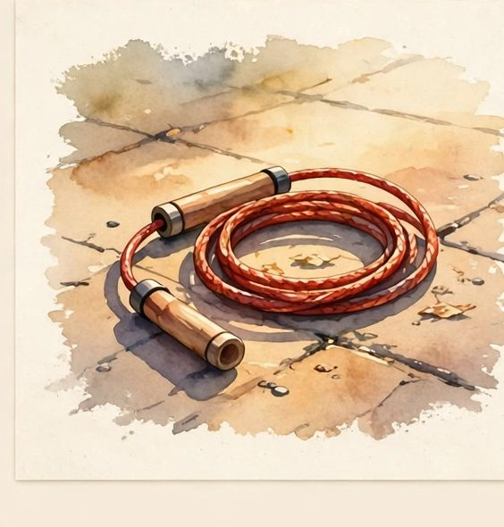
A skipping rope left in a coil on warm pavement, the day's games suspended, not ended.
The technology was a jam jar with holes in the lid, punched by an adult under protest, and the quarry was fireflies: citizens of the dusk, going about their small lit business over the grass. The register has the expedition's full record. The jar filled slowly, because the ethics of the hunt were strict and self-imposed — no grabbing, only waiting with the jar held open like an invitation — and because the hunters kept stopping to watch instead of catch. By full dark the jar held a soft, wandering constellation, and the whole expedition sat around it in the grass, rich.
The ending is the part the register underlines. The jar was opened. Not the next morning, not at the end of summer, but that same night, on the same grass, by vote. The fireflies rose out of it at their own pace, unbothered, resuming their business, and the hunters watched the constellation disperse into the dark it had come from. No one had explained conservation to these citizens. They had arrived at the essential clause on their own: the jar was for looking, not for keeping, and the looking was better — measurably, by the light in the record — for knowing it would end.
The rope lies coiled on the warm pavement where the day's games were suspended, not ended, and the register chooses the word with care. That whole season ran on suspension: jars opened, ropes dropped mid-count, expeditions home for supper with the dark still full of uncaught light. The adult citizen owns jars now with no holes in their lids, full of preserved and permanent things, and is fond of them. But the smile in this hall belongs to the first jar — the one that glowed for an hour, was opened on principle, and taught the hands the difference between holding and keeping.
33The Kitchen Radio, Singing
The radio stood on the kitchen sill with its dial lit like a small harbor, and it sang through the whole administration of childhood: through breakfasts and boilings, through homework done at the table under mild protest, through the long evenings when the kitchen was the only warm room and therefore the capital. The register cannot recover the playlist. It can recover the policy, which was the radio's real contribution: music was not an event in that house. It was a utility, like heat. It ran in the walls, and the citizens grew up inside it the way fish grow up inside weather.
What the citizen remembers, under the music, is the singing. Not performances — nobody in that kitchen would have accepted the word — but the low, absent accompaniment of adults at work: a grandmother keeping the melody while her hands were in the flour, a father supplying only the chorus, accurately, from the doorway, as if the verses were someone else's department. The register notes that this is how the citizen learned what gladness sounds like when it is not announced. It sounds like work, continuing. It sounds like a kitchen that does not know it is happy, and is.
The citizen's own kitchen is quieter. News comes from a pocket now, and music arrives by request, filed and titled and summoned by name, and something in the arrangement is an improvement and something is not. The register records the citizen's private repair of the matter: a radio again, or its descendant, kept on in the kitchen through the cooking, tuned to whatever it finds. The songs are not the same songs. The policy is identical. Some inheritances are not objects, the Keeper observes, setting down the pen. Some are settings — and this one is set, permanently, to on.
34Barefoot on Warm Boards
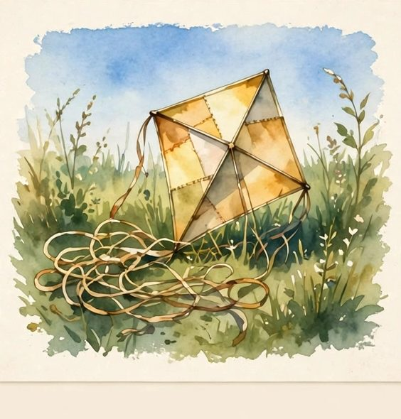
A kite resting in grass, its tail tangled, the bright sky still holding its shape.
The boards of the porch and the kitchen threshold held the day's heat the way a held note holds, and the citizen crossed them barefoot all summer with the particular satisfaction of a person whose comfort required no equipment. The register is aware that this is a small entry. It files it at full length anyway, on the doctrine that size is not the measure: a teacup holds as much light as a window, and a warm board under a child's foot holds as much summer as the whole season's official highlights. Some archives are built of exactly this size of thing, and they are the ones that survive.
Barefoot was the summer's formal dress, and the register lists its regulations honestly: permitted on boards, on grass, on the warm pavement of the lane; forbidden — this was legislation, not advice — on the gravel by the gate. The citizen obeyed the map of it the way sailors obey a chart of shallows, without resentment, because the freedom was real and the chart was drawn by love. To be trusted with bare feet was to be trusted with the season itself. The shoes waited by the door like retired officials, respected, consulted in autumn, and not missed.
The kite rests in the grass with its tail tangled, between flights, and the register finds the citizen in the same posture all summer: between flights, barefoot, entirely operational. The adult the citizen became owns floorboards that no sun reaches and shoes for every weather, and walks, most days, correctly shod through the whole calendar. And then, once a summer, on some porch or warm step, the shoes come off without a decision being taken, and the board gives back its stored heat like a message delivered decades late, word perfect. The foot remembers first. The smile arrives as confirmation.
35The Secret Handshake
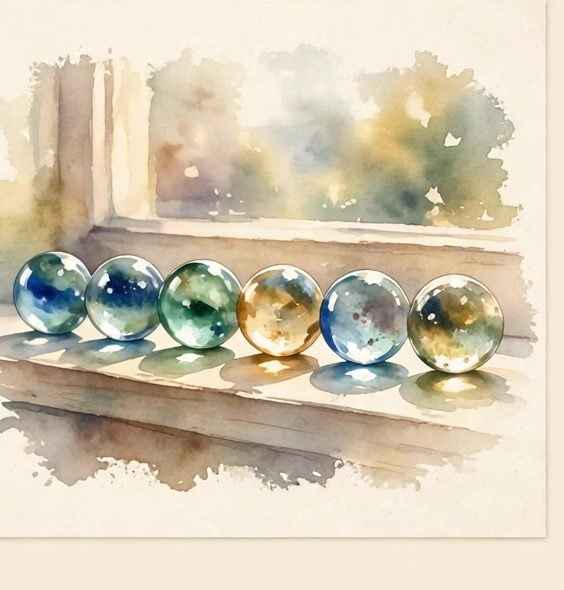
A line of marbles on a windowsill, each one catching the sun, the treasury at rest.
The handshake had, by the register's count, eleven movements, and it was revised so often that keeping current was itself a mark of rank. It involved the thumb in two capacities, a turn of the wrist that took a week to learn, and a conclusion that changed whenever a better one was demonstrated by a visiting cousin. To an adult eye it was ceremony without content. The register, which has handled treaties, disagrees. The handshake was the constitution of a small state, performed at its border: it said who was in, and it said it in a language that had to be earned.
To be taught the handshake was the actual event; the handshake itself was only its anniversary. Teaching took an afternoon of patience on both sides — the instructor grave as a judge, the candidate fumbling the wrist-turn under the pressure of history — and when the sequence finally ran clean, something had been transferred that no object could carry. The marbles on the sill, each catching the sun, were the treasury of that same state: beautiful, negotiable, and worth, by evening, exactly what friendship said they were worth. The register keeps both records together, currency and constitution, in one drawer.
The citizen cannot now perform the handshake and would not pass the border of that small state unchallenged. The wrist-turn is gone; the thumb remembers only that it once had duties. And yet, meeting the friend of that era across a station platform in middle age, the citizen has felt the whole sequence rise in the hands like water finding an old channel — not performed, only present, the way a song is present. They shook hands like adults, correctly, and smiled like citizens of somewhere else. The register files the smile under evidence: the state is dissolved, the constitution still in force.
36Childhood, Unretouched
This hall closes with a rule of evidence. The childhood filed here has not been retouched: the fort melted, the tent leaked, the allowance vanished in an hour, and somebody cried in the snow fort's strong room over a matter the register can no longer reconstruct. All of it stands in the record beside the bicycles and the fireflies, unedited. The sunroom insists on this not out of severity but out of confidence. A childhood that needs its weather confiscated before it can be smiled at was never the citizen's. This one was, entire — rain, gravel, glory and all.
The shoebox on the sunroom floor is the emblem of the rule: photographs unsorted, uncaptioned, some of them blurred, one of them mostly thumb. Visitors to the hall sometimes suggest an album, a chronology, a little tasteful cropping of the era, and the Keeper declines on the house's behalf. Sequence is a story adults tell. The citizen's childhood did not happen in chapters; it happened the way light happens in the sunroom, in patches, according to where the citizen was standing. To sort it would be to improve it, and improvement, the register rules, is a tax this hall does not levy.
So the smile this hall produces is an honest one, and its honesty is the whole of its method. It does not argue that childhood was golden. It testifies that certain hours in it were — a hill, a jar of light, a fort with two rooms — and it lets the testimony stand next to the tears in the strong room without cross-examining either. The citizen leaves the hall the way a visitor leaves the sunroom: a little warmer than the weather strictly requires, carrying nothing that was not already theirs. The Keeper closes the register on the hall and writes, in the margin, one word: unretouched.
37The Corner Where the Light Fell
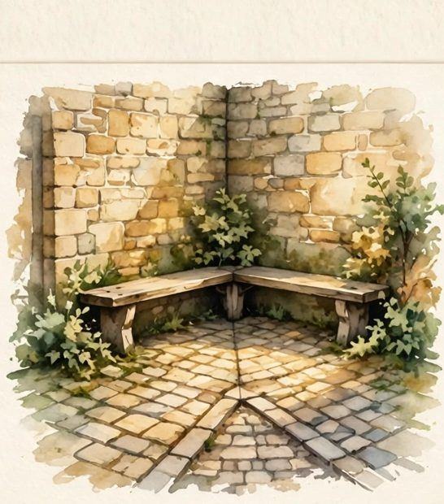
A corner bench where two lanes meet, morning gold pooling on the stones.
Every town keeps one corner that the light has chosen, and the register can direct any visitor to this citizen's: the corner where the two lanes meet, where the morning arrives a quarter of an hour before it reaches the rest of the street. Nothing is built there except a bench. Nothing happened there that would make a plaque. And yet the corner is filed among the places that still make the citizen smile, because for years it was the citizen's unofficial observatory — the place where the day was first inspected, and usually approved.
Corners are where towns keep their appointments, and this one kept the citizen's: friends materialized there on their way to somewhere better and stayed, somehow, for an hour; news arrived there first, walking fast; decisions that had refused to be made indoors were made on that bench in the morning gold, almost without being consulted. The register suspects the light of collaboration. It is difficult to despair at full length on a bench the sun has warmed, and several of the citizen's harder years were, on the evidence, measurably shortened by being begun there.
The corner stands unchanged, which is to say the bench has been replaced twice and the light has not noticed. The citizen passes it now at the speed of errands and still, by old arrangement, slows. Other citizens have their own corners — the register keeps a gazetteer of them, compiled from a hundred such filings — and the doctrine of this hall is written small underneath: a place does not have to be beautiful to be chosen, or yours to keep choosing you. It only has to have held the light once while you were looking, and agreed, ever since, to hold it again.
38A Bench That Fits the Story
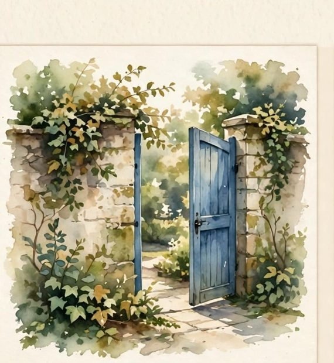
A blue gate in a garden wall, standing slightly open, the path beyond it bright.
It is a curious requirement, but the register stands by it: the bench must fit the story. Some stories are too large for kitchens and too tender for cafés, and they wait, sometimes for years, for the bench of the right dimensions — long enough for the silence between the sentences, placed where the view gives the eyes somewhere honorable to be during the difficult parts. The citizen has told exactly three stories that required this bench. The bench is still there. The register's bench census records it as occupied, permanently, by appointment.
The bench's antechamber is the blue gate in the garden wall, and the register describes it with the respect due to a civil servant of long standing. The gate has never once been found fully shut in the citizen's memory, nor fully open. It stands at its permanent angle, the angle of almost, and the path beyond it is bright in a way the garden has never explained. To sit on the bench you pass the gate; to pass the gate you have already, in some small way, agreed to the story. Thresholds, the Keeper notes, do half the telling.
The bench is usually described as a glad place, and two of its three stories are glad ones, the kind that improve the listener's whole walk home. The third is not, and the register files it here on purpose, under the house rule that the sunroom is one room and not a denial of the others. The bench held that story too, at the same angle of light, and held it well. A bench that fits a story, the Keeper writes in the margin, fits it the way a hand fits a hand: not by being the same shape in every weather, but by being there in all of it.
39The River Road in June
The river road in June is the register's standing example of a place that improves its travelers. It runs beside the water at the water's own pace, under poplars that hold the light in both hands and give it back in pieces, and it has a mile in the middle where the road, the river, and the citizen's errand all agree to slow down. Nobody has ever hurried that mile successfully. The road was not built against hurrying; it was built, the Keeper suspects, by people who understood that some stretches of a life are for arriving and some are simply for being beside the river.
The citizen has traveled it in every capacity the register recognizes: on the bicycle of the hill years, with the river keeping pace like a training partner; on foot with news, both directions; and once, memorably, in a car so laden with other people's furniture that the road took the whole afternoon and charged nothing extra for the view. Each crossing is filed separately, because the road issues a different June to every traveler who takes it slowly enough. It is not the same road at nine, at twenty, at forty. The water sees to that.
Why June, the register has asked the citizen, and the answer came back with unusual speed: because June is when the road is most itself — the poplars full, the water low and conversational, the light staying late like a guest who has been told, correctly, that there is no need to leave. Other months are filed respectfully. But the smile in this hall answers to June, and the house does not argue with its own evidence. The road is still there, the citizen reports, and still slowing its travelers, and the register closes the entry the way it closes all the true ones: without surprise.
40A Station Platform, Long Ago
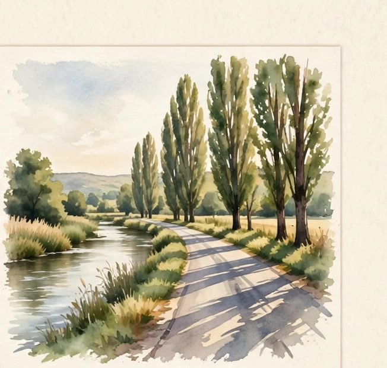
A river road in June, poplars standing tall, long shadows lying across the grass.
The platform was small, and the register measures it fondly: one bench, one lamp, one timetable in a frame, and a roof that covered exactly the people it was likely to be given. Trains were events there, not traffic. The citizen waited on that platform in the years when waiting was still a public art — practiced standing up, with a bag at the feet and the whole of the next life arranged, provisionally, around an arrival time. It is filed among the smiling places, which surprises visitors. Waiting, they say. The register corrects them: beginning.
Half the platform's entries in the register are arrivals of other people, and they are the glad half's gladder portion: the friend descending with a bag and a story already started, the grandmother arriving with parcels that suggested the visit had been provisioned like an expedition. The other half are the citizen's own departures, and they are filed without flinching, because every one of them departed toward something the citizen had chosen, or believed they had, which at nineteen — the register is precise about the arithmetic of hope — amounts to the same thing.
The platform is quieter now, and the timetable in the frame has fewer entries, and the lamp has been replaced by one that minds its own business. The citizen stood there recently, not waiting for anything, while the river road beyond the hedge ran its June beside the water and the poplars gave back the light in pieces. Nothing arrived. Nothing needed to. The register files the visit under the hall's central doctrine: a place where you once began gladly does not stop being yours when the beginnings move elsewhere. It keeps the bench. It keeps the light. It keeps, most of all, the evidence that you were once exactly that ready.
41The House With the Blue Gate
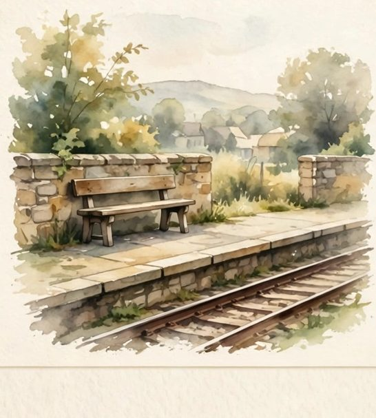
A small station platform in summer haze, one bench waiting in the heat.
The house is remembered by its gate, and the gate was blue — not the pale blue of distance but a working blue, paint laid on thick over older paint, the color deepening at the edges where hands had polished it for years. The citizen passed through it on arrivals and departures, and the gate received both with the same small ceremony: a latch lifted, a hinge that announced, a swing that never quite needed oiling. The register notes that a house is often kept in memory by exactly one detail, and for this house the detail was a color, standing at the boundary between the street and the welcome, saying plainly whose threshold this was.
To open that gate was to be expected, and to close it behind you was to be inside the story rather than outside it. The paint was renewed more than once, in slightly different blues, and nobody minded the mismatch of years; a gate, like a face, is allowed its history. Beyond it the path ran plain to the door, and the house performed no other introduction. The Keeper, who files such things carefully, observes that the smile this memory raises is not really for a house at all. It is for the feeling of arriving where the latch already knows your hand.
The house has other keepers now, or none; the gate may have been repainted, replaced, or taken away with the fence. The register does not require the facts to stay convenient. In the sunroom of the memory the gate remains the blue of its best year, and the citizen, who now passes a hundred plainer gates without a thought, still slows for this one. That slowing is the whole exhibit. A smile is evidence, not an argument: it does not claim that everything behind the gate was good. It claims only that the arriving was, and that this is enough to keep.
42One Street, Remembered Kind
Whole streets are harder to keep than single houses, but this one is kept entire: the low fences, the gardens running slightly wild, the corners where the grass grew through the pavement and was allowed. It was not a rich street or a famous one. Its distinction was a habit of mildness, kept up by everyone on it without discussion, the way neighbors keep a path swept in winter. The citizen walked it at the hours when streets show their character — early, when the windows were lighting, and at dusk, when the day was being folded away behind every door.
The street ran on small exchanges that never rose to the level of events: tools borrowed and returned cleaner, houses watched during absences, ripeness reported over fences, a ladder that belonged to everyone in turn. None of it was recorded anywhere, which is precisely why the register values it. A neighborhood's kindness is mostly unwitnessed, transacted in quantities too small for history. The smile this street raises is accordingly modest and durable. It does not blaze; it holds, like the last light on brick. The citizen learned there what a place owes the people passing through it: very little, offered reliably.
It would be easy, and false, to say the street was always kind; streets have weather like houses, and this one had its cold fronts, its closed doors, its years when nobody had anything spare. The memory does not argue otherwise. What it keeps is the prevailing climate — the long average of evenings when the street was a mild place to be young, or tired, or new. The Keeper files it under places that did their work quietly. The citizen returns there only in the sunroom now, sits a while on an imaginary fence, and then goes back to the day, which is the correct use of a visit.
43The Field Behind Everything
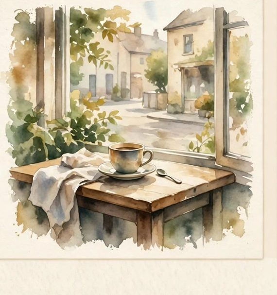
A café table by a window, cup and saucer set, the street soft beyond the glass.
Behind the houses of the remembered street there was a field, and behind the citizen's whole early geography there is still one field that stands behind everything. It belonged to no one in particular and therefore to the children entirely: a rough parallelogram of grass, ditch, and sky, with one path beaten diagonally by feet that had somewhere better to be. Nothing was built there, nothing was grown there on purpose, and that was its dignity. The field was the unofficial part of the world, where the plans of adults ran out and the light simply did its long evening work undisturbed.
The field's calendar was kept in grasses. There was the week of the first green, the long reign of the dandelions, the high summer when the grass stood taller than a seated child and hid whole expeditions, and the scorched end of August when it crackled underfoot. Games were invented there with rules that lasted one afternoon and were never written down. The register, which is thorough about such things, notes that the field asked nothing and charged nothing, and that its freedom had a flavor no purchased pleasure has matched since: the flavor of ground that was simply allowed to be unadministered.
Fields like that are built on, in the end, or fenced, or let go to scrub; the register has checked, over the years, and declines to report. It is not the register's business. What is kept here is the field at its working best, with the sky doing most of the architecture. The citizen, who has since stood in famous landscapes on several continents, reports that none of them abolished the standard set by that rough grass. Every openness is still measured against it. Every feeling of room enough. The smile is for the field's plain generosity: it was behind everything, and it asked to be nothing more.
44A Café Table by the Window
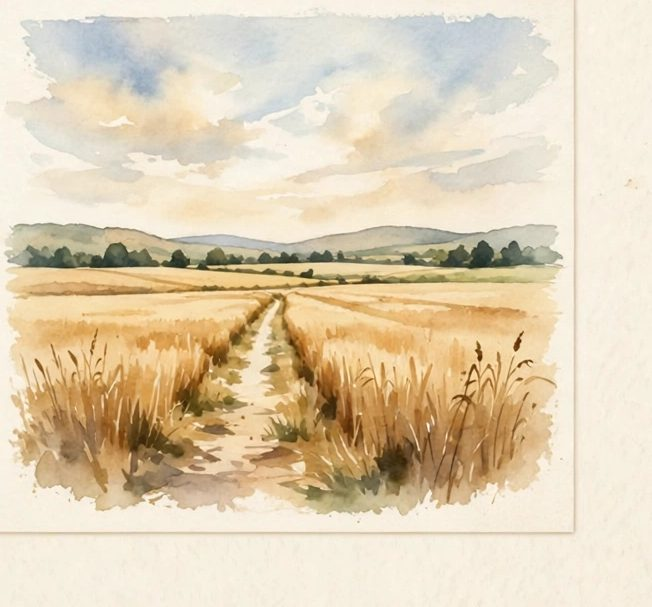
A field path at harvest, stubble gold on either side, under a wide sky.
There was a café, and in the café a table by the window, and the table was understood — by the citizen, by the staff, by the light itself — to be reserved for the long sit. Other tables were for eating and leaving. This one was for watching the street perform its ordinary theater while coffee went cold in the best cause: conversation that had nowhere to hurry to. The window glass made a frame and the frame made a picture, and the picture changed by the hour — deliveries in the morning, errands at noon, the whole town promenading at dusk in its considered clothes.
A table by a window is an observatory disguised as furniture. From it, a person is inside and outside at once — sheltered enough to linger, exposed enough to feel the weather of the street. The citizen learned whole humanities at that table without opening a book: how people hurry, how they dawdle, how they meet and part at corners. The Keeper approves of window tables and enters them in the register as instruments of attention. Nothing was produced at them, which was their productivity. The hours spent there were not spent at all. They were kept, and they pay their small dividend still.
The café has changed hands, or names, or closed into a shop selling something else entirely; the register keeps the table anyway. In the sunroom it stands where it always stood, at the exact angle of the light, with a cup that never quite empties because nobody is counting. The citizen sometimes sits at other window tables in other towns and performs the small ceremony of settling in — and under the ceremony, like a watermark, is the first table that taught the posture. The smile is not for the coffee, which was ordinary. It is for the discovery that an hour can be a room, and furnished.
45The Roof We Were Not Allowed On
Above the house of the blue gate there was a roof, and the roof was forbidden, and the forbidding was the making of it. Other roofs in memory are mere weather protection. This one was a country under a flag of prohibition — tiles tilted toward a sky the citizen was allowed to see only from below. The gutter, the chimney, the moss in the shaded seams: all of it was surveyed daily from the yard with the longing of a cartographer who may map a coast but never land. The register files the roof under places improved by being unreachable.
What was imagined up there bore the usual relation to fact, which is none. The citizen furnished the roof with lookouts, landings, a whole aerie of private grandeur, although the evidence — tiles, a vent, one weather vane listing slightly — suggested a more modest establishment. This discrepancy is not a defect of the memory. It is the memory. A forbidden place is furnished by the imagination at its own expense, and the imagination, unsupervised, always overbuilds. The Keeper records the roof twice: once as it was, tiles and moss, and once as it was in the long afternoons of wanting, which is the version the smile belongs to.
Time, of course, abolished the prohibition long ago; the citizen has since stood on roofs without ceremony and found them honest, windy, unremarkable places, kind to antennas. Nothing up there matched the country invented from the yard. And yet the register counts this among the mercies. The rule that kept the citizen off the roof also kept the roof worth wanting, and the wanting itself became one of the glad rooms — a small, sunlit chamber of almost. Some memories smile because something happened. This one smiles because something was lovingly, safely, permanently about to.
The Sunroom Desk
One desk receives all correspondence for this house — questions, corrections, and word of any memory that still makes you smile: a face, a place, a kindness received, a mishap that turned kind. It is read in the order it arrives.
46The Village at Harvest
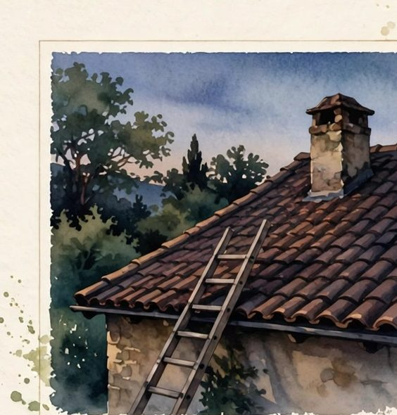
A roofline at dusk, a ladder resting against it, the last light on the tiles.
The village kept one week a year the way a table keeps a feast day, and that was harvest. The citizen arrived in it as a guest of the season — old enough to be useful, young enough to be fed first — and found the whole place turned outward: doors open, carts in the lanes, the fields being emptied into barns with a haste that was somehow also a festival. Dust hung in the light and made it visible. The air smelled of cut stalks and warm earth. Even the bells seemed to ring at a working pace.
Harvest is the year's table set outdoors, and the village understood the arrangement without discussing it. What the fields had been promising since spring was now to be believed, weighed, and stored against the winter, and every hand in the parish had a place in the believing. The citizen's memories of the week are not of any single triumph. They are of competence at every scale — knots that held, loads that balanced, meals that appeared in fields at the exact hour hunger did. The register notes that abundance, when it is earned in company, does not look like wealth. It looks like lunch.
The citizen has eaten in celebrated restaurants since, in cities the village would have found implausible, and the register is scrupulously fair to those meals. But the standard of plenty was set in a harvest field, on a cloth spread over stubble, with bread that had been that morning's wheat in everything but fact. Places keep their weather, says the doctrine of this hall, and the village's weather was harvest: gold, dust, and the sound of work finishing well. The smile comes back with the season every year, punctual as the swallows, asking nothing but a moment's standing still to be received.
47A Room That Smelled of Rain
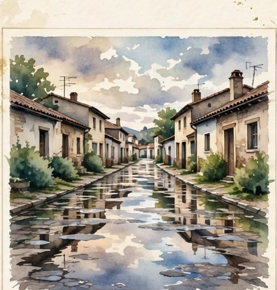
A village street just after rain, every puddle holding a piece of the sky.
The rain had stopped an hour before, and someone opened the room that had been shut against the wet season, and the smell came out to meet the citizen like a host who has been waiting. It was not a dramatic smell. It was rain itself, domesticated: wet earth carried in on boots long ago, curtains that had breathed damp springs for decades, wood that remembered every storm it had kept out. The citizen stood in the doorway doing nothing but breathing, while the room aired around its furniture, and understood that a place can be recognized with the eyes closed and the heart entirely unprepared.
Smell is the most direct of the corridors. A sight must be interpreted, a sound placed, but a smell simply arrives, carrying its whole room with it, furniture and season and the citizen's own younger breathing self included in the freight. The register, which keeps its records in every sense it can borrow, notes that this room is stored almost entirely as scent. Ask the citizen to describe it and the account comes out thin — a bed, a shelf, a window giving on wet green. Ask for the smell and the room stands up complete, down to the hour of the day.
It happens still, in other houses, in other countries: a door opened after rain, a stairwell breathing damp plaster, and the room is there before the citizen can consent to remember it. The smile arrives ahead of the picture, which the Keeper takes as proof of the register's filing system — the glad rooms are kept by whichever sense loved them most. There is no lesson in it, and this house does not deal in lessons. There is only the small recurring gift of a smell that kept a room for fifty years and delivers it, unchanged, in a second.
48Places Keep Their Weather
The hall of places closes with its doctrine, which the Keeper has been demonstrating all along without underlining it: places keep their weather. A place in memory is never filed under its geography. It is filed under the light it was seen in, the season that was holding it, the rain or gold or first snow that the citizen's one visit happened to coincide with — so that forever afterward, the place and its weather are a single entry, and to summon one is to stand in the other. The register keeps them together and refuses all requests to separate the records.
This is why returning can be so strange. The citizen has gone back, in the flesh, to streets and fields and one blue gate, and found them standing in weather the memory never issued — a famous view under low cloud, a childhood field in November mud. The mismatch is not a disappointment and not a correction. The visited place has its own ongoing life, in all weathers, and owes the memory nothing. The remembered place, meanwhile, is not a photograph to be graded against the original. It is a room in this house, and in this house the weather is part of the furniture, arranged once and kept.
The citizen does not ask the past to have been sunny; several of this hall's rooms are kept in rain, and one in snow, and they are glad rooms all the same. Weather is not the same as fortune. What makes a place's weather worth keeping is only that the citizen was, for once, entirely there — awake in the senses, unhurried, unarmored — and the place, meeting such a visitor, gave its best hour and kept the appointment forever. The door of the hall shuts softly behind the tour. The places remain, in their weathers, at their posts, ready to be visited and never required to be.
49The Soup That Meant Saturday
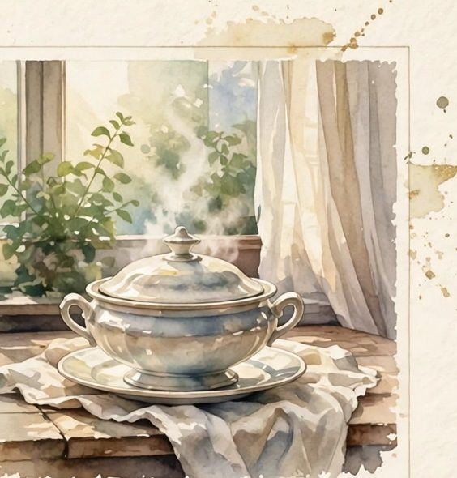
A soup tureen on a Saturday table, steam rising through the window light.
Saturday had a taste in that house, and the taste was soup. Not a soup of ceremony — a working soup, built across the morning out of whatever the week had left standing, announced by degrees: first the bones or the vegetables meeting the water, then the herbs, then the long, low simmer that filled the rooms like weather arriving. The tureen came to the table with the gravity of a mayor. Steam rose off it in the window light, and the week, whatever it had contained, was declared officially survivable. The register files the soup under the household's founding documents.
A soup like that is a kitchen's way of refusing waste and refusing despair in the same gesture. The ends of things went into it — the last carrots, the heel of the cabbage, the chicken's second career — and came out of it as a first course, honored and steaming. The citizen, who was young and had no theory of this, understood it perfectly at the level of the spoon. Saturday soup said that the household knew how to convert a week into a meal. It is a conversion the citizen has attempted ever since, in other kitchens, with mixed success and undiminished respect.
The soup is still made, sometimes, on Saturdays when the citizen's own kitchen has the week's ends to deal with — and sometimes it is not made for months, and the register does not fine anyone. A glad memory is not a schedule. What is kept is the standard the soup set: that a day of the week can have a flavor, that a household can sign its work, that steam in window light is a form of handwriting. When the tureen of memory is set down in the sunroom, the citizen smiles before the lid is even lifted. The anticipation, it turns out, was always half the soup.
50A Table Too Small, Exactly Right
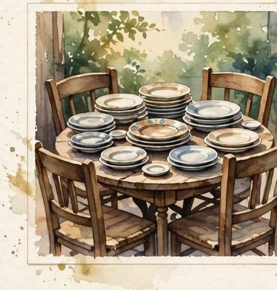
A small round table crowded with plates, all its chairs drawn close.
The table was too small for the family and exactly the right size for the family's happiness, and these two facts were the same fact seen from different chairs. At full muster, plates overlapped like shingles, elbows negotiated treaties, and the passing of a dish was a small expedition conducted over other people's dinners. Nobody could withdraw at that table. Distance was not among its furnishings. The citizen, who has since dined at tables with acreage, reports that the conversation at the small one was better seasoned, because it could not afford to be anything but close.
Smallness, the register observes, is a technology. A big table lets a household scatter; a small one gathers by simple geometry, the way a small room gathers heat. At the small table, a person's news reached everyone before it cooled. A silence included the whole company. Even the dog, in the early configuration, held a position under it like a foot warmer with opinions. The Keeper files the table under instruments of closeness and notes its one defect, which the family considered a feature: there was nowhere at it to hide a mood, and so moods were dealt with promptly, like dishes.
The doctrine of this house says that size is not the measure, and the small table is its standing proof — a teacup holds as much light as a window, and a table for six, seating nine, holds as much family as a hall. The citizen measures dining rooms by it still, suspicious of any table at which a person could feel alone with other people in the room. In the sunroom the small table stands set for its full, impossible company, plates overlapping, the talk already beginning. The Keeper sets one extra place at it by custom. There is always, the register says, an extra place.
51Jam on Everything
In the season of too much fruit, the kitchen entered its jam period, and for two weeks the house ran on sugar and steam. The plums came in faster than any table could absorb them, and the preserving pan — the household's heavy artillery — took up residence on the stove. Jam was the official answer to abundance: what could not be eaten by Friday could be summer, sealed. The citizen's duties were stirring, skimming, and the tasting that was officially quality control and actually the entire point. The register records the jam period as the kitchen's carnival, sticky and sanctioned.
And then, all winter, there was jam on everything. On bread, obviously, and on porridge, and on the plain cake that existed largely as a vehicle; on fingers, on spoons held upside down, on one memorable occasion on the cat, which the register declines to detail. A spoonful of jam in February was not a condiment. It was a dispatch from July, reporting that the sun had been thorough and the kitchen had been ready. The citizen learned early that preservation is a form of correspondence — the summer writing letters to a season it would never meet, trusting the jars to deliver them.
The pantry shelf held the year's sweetness in order of making, and the order was a calendar the citizen could read before being able to read much else. This jar was the week of the wasps. That one was the day the neighbors' tree was harvested by treaty. The register approves of edible archives; they are the only kind that improves the present tense while documenting the past. In the sunroom the shelf stands in good light, the jars a graduated red. Some memories are kept in albums and some in larders. The Keeper keeps both under the same rule: open them in the dark months, and share.
52The Second Helping, Ungrudged
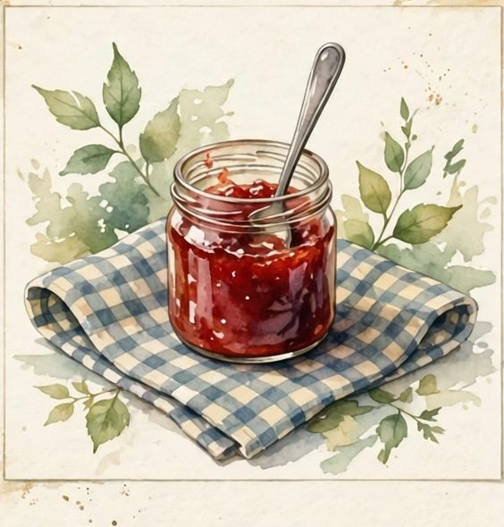
A jar of jam with a spoon standing in it, a checked cloth beneath.
The second helping arrived without ceremony and, more remarkably, without sighing. In that kitchen, to take more was not to impose; it was to compliment the cook in the only dialect she fully trusted. The dish came around again as a matter of weather — of course there would be more weather — and the citizen's plate was refilled with the same ungrudging motion as the first time. The register, which has seen the alternative, records the difference precisely. In some houses a second helping must be negotiated like a border crossing. In this one it was a door that swung both ways.
This is filed under small things, and the Keeper insists on the filing. A child cannot have described it then, and yet the body kept the minutes: the shoulders coming down from around the ears, the discovery that appetite was not an embarrassment in this house, that wanting more of a good thing carried no fine. Such permissions are the load-bearing walls of a remembered kitchen. Years later, the citizen could walk into grander dining rooms and remain unintimidated by their plenty, having been trained in the only school that matters: a table where more was a word without a shadow on it.
The custom is kept now in the citizen's own house, by policy older than any policy: the dish goes around again, and a guest's refusal is believed the second time only if it is repeated with both hands raised. It is a small liturgy and the register guards it. To be ungrudging is not an expense; the accounts, kept honestly over a lifetime, show that generosity at the table is the one currency that is never devalued by circulation. In the sunroom, the dish is still going around. The Keeper notes, with satisfaction, that it has never yet come back empty of takers or of givers.
53Tea at the Wrong Hour
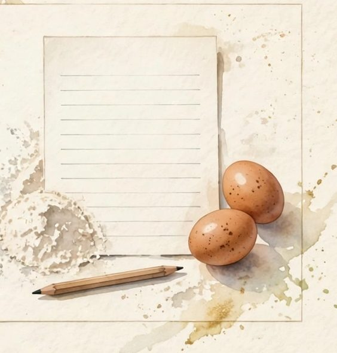
A card of plain ruled lines beside flour and eggs, a pencil laid down next to it.
Tea was the house's answer to unscheduled events, and therefore was made at hours no timetable would defend: at midnight, when a train had been missed or a letter misread; at dawn, when someone could not sleep and the kitchen offered its chair; in the middle of the afternoon of a crisis too small for any other ritual. The kettle went on without discussion, the way rain starts. The register notes that these were the teas that mattered most, precisely because they were off the books. A scheduled tea is a pleasure. An unscheduled one is a hand on the shoulder of the day.
The wrong hour turned out, on examination, to be the right hour with its tie loosened. Tea at the proper time is a custom; tea at the wrong time is a confidence — somebody saying, in the plainest available language, stay, sit, let the water boil and the world narrow to a table. The citizen drank such teas in several houses and learned that the kettle is a universal instrument, playable by anyone willing to be kind on short notice. In the register these entries are marked with a small star, the Keeper's private notation for kindness that arrived dressed as a beverage.
It would be too much to say the teas solved anything, and this house does not deal in too much. The missed train stayed missed; the letter had to be answered in the morning. What the tea did was smaller and, the register contends, greater: it made a floor under the hour, a warm interval in which the unscheduled event could be looked at from a chair instead of from the floor. The citizen still puts the kettle on at wrong hours, in a kitchen far from the first one, and the steam rises like a signature being practiced. Some habits are heirlooms. This one pours.
54The Recipe in a Familiar Hand
The recipe lives on a card in a tin box, and the card outlived the kitchen it was written for, which makes it, by the register's reckoning, a letter that arrived. The hand is a familiar one — quick, upright, economical, the hand of a person who measured by eye and wrote for someone she expected to stand beside her, not for posterity. The quantities are in handfuls and glasses. The instructions assume weather. The citizen has cooked from that card for decades, and the card has thinned at the folds like a map of a country visited every week of a life.
To cook from it is a collaboration conducted across a considerable distance of years, and the collaboration has terms. The card supplies the order of events and withholds everything that a body learns by standing in a kitchen: how the dough should feel, when the oven is lying, what ready smells like. Those, the cook must bring — and does, increasingly, because the missing parts were taught once in person and the hands remember what the page never knew. The register files this under correspondence answered. Every successful making of the dish is a reply, delivered in the only currency the past accepts: somebody eating, with attention.
The dish, by now, could be made blindfold; the citizen knows it the way one knows the stairs of one's own house. And still the card comes out of the tin, is propped against the jar, and is consulted at the accustomed moments, because the recipe is not the point anymore. The point is the handwriting's company. The Keeper understands this and records it without embarrassment: some objects are kept for their information, and some are kept the way chairs are kept at a table — for the person who is expected to occupy them. In the sunroom the tin box stays unlatched. Its card is the kitchen's longest-serving guest.
55Burned, and Eaten Anyway
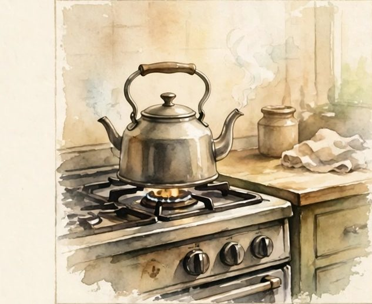
A kettle on a stove in a morning kitchen, the first steam beginning to rise.
Every kitchen in the register has one burned dish it is proud of, and this house's is the one that was served anyway, to guests, with the apology delivered as a toast. The oven had been confident and wrong; the bottom of the dish had gone past amber into archaeology. What the Keeper records is not the failure but the table's response, which was immediate and unanimous: extra helpings taken as a matter of solidarity, the burned edge praised for its character, the cook rescued from the evening she had feared by the simple expedient of nobody letting it be that kind of evening.
A house is measured, in the long run, by how it meets failure in small things, because small things are most of life. The burned dish could have become an anecdote of shame, retold at the cook's expense for years, with the moral that she reached too high. Instead it became the founding comedy of that kitchen — the night the table voted, by acclamation and second helpings, that the company mattered more than the crust. The register is firm on this point: mercy at the table is not politeness. It is a doctrine, practiced with forks, and it outlasts any single meal by decades.
The dish was made again, correctly, many times afterward, and the register notes the pleasant fact that the correct versions are barely remembered. It is the burned one that the family requests in stories, the burned one whose retelling still raises the exact smile this house exists to keep. The citizen, presiding over various ovens since, has held the line the table taught: when something scorches now, it is announced without panic and eaten without commentary beyond the kind. The Keeper enters the burned dish in the archive in a place of honor. Some rooms are sunny because nothing in them ever went wrong. This one is sunny because something did, and it was met so well.
56The Chair That Was Mine
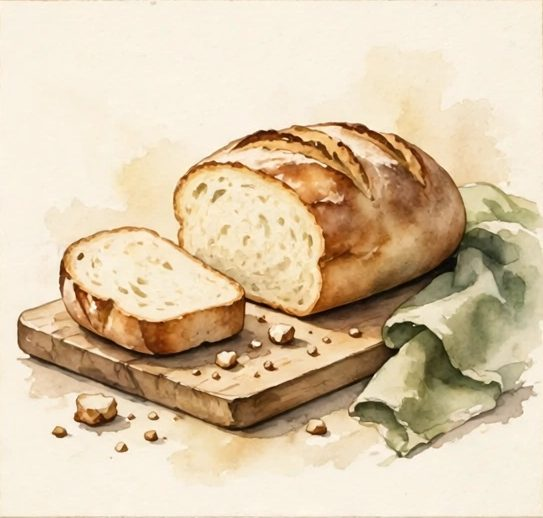
A loaf on a board with one thick slice cut, crumbs scattered beside it.
No decree was ever issued, but at that table the citizen had a chair, and the chair was understood the way weather is understood — as a fact that organizes everything else. It stood at its place with its cushion tied on and its one leg a fraction short, corrected by a folded card that nobody replaced because the arrangement had been reached by evolution. To sit in it was to be counted for the meal before the meal began. The register remarks that belonging, in a household, is rarely announced. It is upholstered, positioned, and kept swept, and a child reads it fluently without ever being told.
Rank, at that table, was legible in seating. Guests began in borrowed chairs, were promoted by degrees to regular ones, and arrived at full standing the day a chair began to be kept for them between visits. The citizen watched this quiet peerage operate for years before understanding it was one. It taught what no lecture on hospitality has matched: that a place at a table is not given in a speech but in a piece of furniture with your name worn into it. The Keeper files chairs among the house's official instruments, equal in rank to the tureen and the kettle, and considerably more personal.
The chair itself is gone — chairs go, with their joints and their cushions, and the register does not pretend otherwise. What remains is the place it guaranteed, which turned out to be portable. The citizen has been given chairs at other tables, in other countries, and has received each one with a small internal bow to the first. And in the citizen's own house, the custom is kept deliberately: chairs are positioned before they are needed, one is always in reserve, and a guest's second visit is greeted by the sight of the same chair waiting. It is the whole doctrine of this hall, expressed in furniture.
57Midnight in the Fridge Light
The house at midnight had one light left in it, and the light lived in the fridge. The citizen, wakeful in the small hours for reasons the register has never required, would cross the dark kitchen in bare feet and open that door, and the cold light would come out like a moon kept in a cupboard — patient, bluish, falling across the tiles in a clean rectangle. The house slept. The rules slept. For the length of one standing meal, the kitchen belonged to whoever was awake in it, and the silence had the quality of a held breath let out very slowly.
The midnight meal was eaten standing, by hand, without plate or witness: cold chicken considered carefully, pickles straight from the jar, the heel of a cake that had been meant for tomorrow's guests and was, in the event, mourned by no one. It was a private festival with an attendance of one, and its joy had a particular flavor — the flavor of being unobserved in one's own happiness. The register, which is discreet by charter, records the menu only in aggregate and the citizen's younger self without comment, except to note that the fridge light never once gave the celebration away to the sleeping house.
Years later, in a kitchen of the citizen's own, the fridge light is whiter and quicker, and the meals at midnight are rarer and better lit. The smile, when it comes, is directed at that earlier figure standing in the cold rectangle of light — unhurried, unembarrassed, entirely at home in the one hour of the day that asked nothing. Some glad memories are of being welcomed by others. This one is of being at ease alone, which the Keeper files among the rarer furniture of a life. The register closes the entry without a moral. The light, it notes, is still on in the sunroom's kitchen. It always was.
58Someone Always Saved Me Some
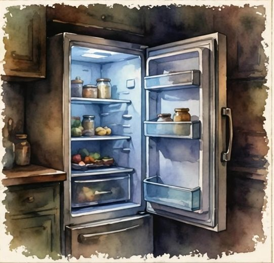
An open fridge at night, spilling cool light into a warm, dark kitchen.
The rule was never spoken, which made it more binding than the spoken ones: whoever came home late came home to a plate. It stood in the cool place, covered with another plate or a cloth, holding the meal's best argument in reserve — the slice kept from the middle, the portion no one had been allowed to plead for. The citizen arrived late from trains, from shifts, from the ordinary delays of a young life, and the plate was there with the regularity of a sacrament. To find it was to be told, in the house's plainest language, that absence had been counted and provided for.
The Keeper enters this among the kindnesses that wear no costume. Nobody was watching when the plate was covered; no gratitude was expected to be performed at any particular pitch; the saver and the saved rarely discussed it, then or ever. And yet the register contends that this may be the purest entry in the whole hall, because it describes being expected — not welcomed, which is an event, but expected, which is a condition. To live in a house where your lateness has already been answered is to carry a floor under every delay the world can arrange. The citizen has tested the proposition on several continents. It holds.
The custom has been inherited so thoroughly that the citizen now performs it without deciding to: a portion held back when a guest is delayed, a plate covered in a kitchen whose owner would have to stop and think to explain why. This is how the sunroom's furniture reproduces — not by instruction but by having once been sat in. The Keeper, closing the entry, notes the doctrine of the whole house in its smallest form: kindness does not need to be witnessed to be structural. Somewhere tonight, the register says, a plate is being covered. The tradition is in no danger whatsoever.
59The Kettle's Old Announcement
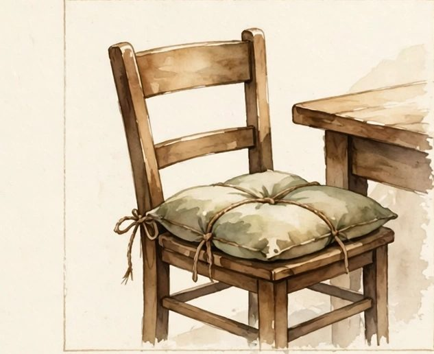
A kitchen chair with a cushion tied to it, its place at the table kept.
The old kettle did not switch itself off; it announced. Its voice began as a murmur in the pipes' register, rose through a thoughtful hum, and arrived at a whistle that the whole house could set its watch by — a long, rising note that meant a pause was being prepared. Decisions in that kitchen were traditionally made after the announcement, never before. Letters were opened after it. Apologies were timed to land just as the pouring began. The register treats the kettle's song as the household's true clock, against which the wall clock was merely a rumor with hands.
Every lasting house has a soundtrack, and most of it is smaller than music: a stair that reports a step, a door with views on the weather, the particular knock of a spoon against a pot that meant tasting was underway. The kettle led this orchestra without competition. Its note is the first sound the citizen hears when the remembered kitchen is entered, arriving ahead of any picture, the way the rain-room arrives by smell. The Keeper files houses by their sounds as faithfully as by their floor plans, and contends that a home is not fully remembered until it can be heard.
The modern kettle clicks off in silence, efficient and unmusical, and the citizen does not begrudge it — but something in the day has lost its bandleader. There is no longer a rising note to gather a household, no official moment at which the kitchen declares a pause open to all comers. So the announcement is supplied by memory now, at need: the citizen, putting on water in a quiet modern kitchen, hears under the hush the old whistle climbing its scale, and smiles at the fidelity of the recording. The register keeps it on file at full volume. Some appliances are replaced. This one was succeeded, and there is a difference.
60What the Table Remembers
The hall of kitchens closes where it must: at the table, which is the house's longest-serving witness and its most patient registrar. Everything in this hall happened around one — soups and seconds, teas at wrong hours, burned offerings and covered plates, chairs assigned and kettles applauded like soloists. If the table kept its own register, it would be the longest book in the house, and the kindest, because the table never recorded a meal without also recording the company. Its surface holds the archive in another script: rings, scores, one burn mark shaped, the family always said, like a small continent.
The Keeper has measured other furniture and found it less reliable. Beds keep only the night watch; desks keep the official version, all paperwork and posture. The table kept everything, including the unrecorded business: letters written at it after supper, sums done on its cloth, mending spread under its lamp, games that lasted past bedtimes, and the long silences of people who had known each other long enough to be silent in company. Even the arguments are remembered at it more gently than they were conducted — the table's one editorial habit, which the register has decided not to correct.
The citizen runs a hand, in memory, along that surface the way one greets an old colleague — with respect for the service and no need to say much of it aloud. Gratitude, in this house, is not a performance, and the table would not thank anyone for a speech. What it asks is only that the custom continue: that meals be sat down to, that chairs be kept for people, that something in every week be served in the tureen's spirit if not in the tureen. The tour leaves the hall by the kitchen door, which stands open. The Keeper locks nothing. In the sunroom behind the glass, the table is set, and it is always nearly supper.
The Sunroom Desk
One desk receives all correspondence for this house — questions, corrections, and word of any memory that still makes you smile: a face, a place, a kindness received, a mishap that turned kind. It is read in the order it arrives.
61The Wrong Train, the Right Day
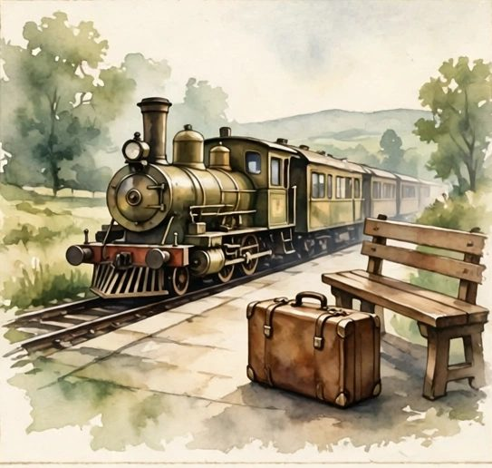
A train waits at a small country halt in kind light, a suitcase set down beside the bench.
The register keeps a small section for journeys that began incorrectly, and its first entry is always the train taken in error. The citizen boarded in a hurry, settled into the seat, watched the familiar stations fail to arrive, and understood, somewhere past the third unfamiliar field, that the day had quietly changed its itinerary. Nothing about the mistake was noble at the time. It was annoying, and expensive in minutes, and it unfolded in a carriage with no refreshments trolley. But the wrong train is remembered kindly in this house, because it delivered the citizen to a platform where the right train would never have stopped at all.
What waited at the wrong platform is a matter the register records without embroidery: a town not on any list, an hour with nothing scheduled in it, a bench in kind light. The citizen walked where there was no errand to walk to, ate where the day's plan had never pointed, and spoke with people whose names belong to that afternoon alone. None of it could have been arranged deliberately. It had the loose, unrepeatable quality of all genuine accidents, which run on their own timetable and accept no bookings. By evening the wrong town had become, in the telling, simply the town where that day happened.
The Keeper is sometimes asked whether the sunroom keeps this memory as a lesson about planning, and the answer, entered plainly in the margin, is no. The house does not recommend wrong trains. It keeps the memory because the smile arrives with it still, decades later, when the timetable has long been forgotten and the errand at the other end cannot be recalled at all. What remains is the light on an unfamiliar platform and the discovery that a day can be misdirected without being ruined. The memory is evidence, not advice: it proves one afternoon survived its own mistake, and turned out, on balance, rather well.
62Locked Out, Laughing by Midnight
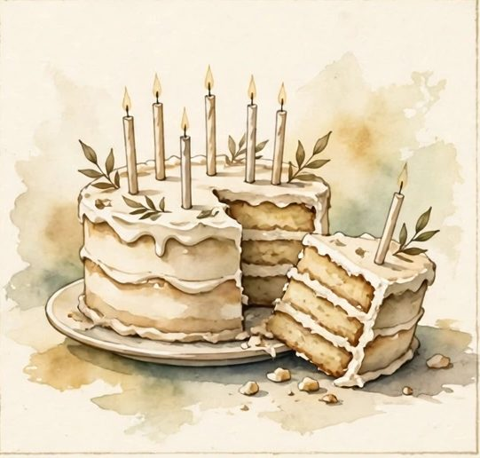
A birthday cake leans cheerfully on its plate, one side slipped, the candles still unlit.
The register's entry for the locked door begins with a sound every citizen knows: the latch falling home a half second before the mind supplies the word keys. The citizen stood on the step in evening clothes, patting pockets that had been patted already, while inside the house the lights burned companionably and the kettle could be heard considering its work. There was no villain in the story, which is what makes it keepable. A door is a door; it does what doors do. The fault, if the house insists on filing one, belonged to haste, and haste has never once apologized to anyone.
What followed belongs to the annals of the doorstep: the neighbor who appeared with a ladder and no questions, the borrowed telephone, the long wait conducted sitting on the mat like a parcel the house had ordered and then refused. It was cold in the way of late evenings, and undignified in the way of all doorsteps, and the citizen's dignity survived it anyway, which the register notes as the evening's real finding. Help arrived at the pace help arrives, unhurried and entirely sufficient. When the lock finally turned, it was past eleven, and the whole street seemed, by then, to be in on the story.
By midnight the citizen was inside, making tea in a coat, laughing in the kitchen at nobody in particular. That is the part the sunroom keeps: not the lockout, which was merely cold, but the exact hour at which inconvenience finished ripening into comedy. It rarely happens on the same night, the Keeper observes. Usually the laugh needs years, a drawer to ripen in. This one came early, and arrived with company: the neighbor at the door with two mugs, the whole small saga already improved in its first retelling. Some memories are kept because they were happy. This one is kept because it became so, quickly and on the premises.
63The Cake That Fell
The cake was made with genuine ceremony, and the register respects that: a good bowl, a warmed oven, a recipe read twice and then, fatally, a third time with confidence. It rose as cakes in stories are supposed to rise. It browned at the edges exactly as promised. And then, in the short journey between oven and table, it folded itself gently sideways with the air of a guest sitting down too fast, and could not be persuaded back. The kitchen went quiet in the particular way kitchens do when everyone present is deciding, together, how serious this is allowed to be.
It was served anyway, which the house records as the household's finest decision of that season. It was served leaning, with the candles set at a gallant angle in the slope, and it was, by every account the register holds, delicious in the unembarrassed way of cakes that have nothing left to prove. The fallen cake fed exactly as many people as the upright one would have. It simply declined to be photographed from the front. Birthdays, the Keeper notes in the margin, are not structural engineering. A cake is a promise about flavor, not about posture, and this one kept its promise in full.
In the years since, the leaning cake has become the standard by which other cakes in that kitchen are judged, and few have matched it. It is summoned in conversation whenever a plan collapses handsomely: the picnic under rain, the holiday of wrong trains. Do not worry, somebody says; remember the cake. The sunroom keeps the memory because it holds a whole household philosophy in one dessert: that a thing can fail at its shape and succeed at its purpose, and that the people around a table are under no obligation to confuse the two. The smile, when it comes, is mostly tenderness toward everyone who ate, and asked for more.
64A Haircut History Forgave
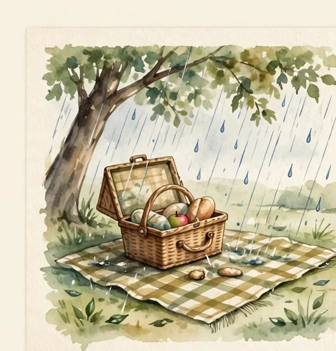
A picnic blanket lies under a tree as the first rain begins, the basket open beside it.
The haircut was not the citizen's idea, which the register underlines twice, in fairness and in ink. It was suggested by a friend with scissors and confidence, in a kitchen, in the hour when such suggestions sound like wisdom. The result belonged to no known decade. It suggested several centuries at once, none of them flattering, and it was worn, because hair offers no alternative, to school, to work, to a family photograph, and to every mirror in the house, each of which filed its own silent report. For a fortnight the citizen went about in a hat whenever the weather could be blamed.
Hair, however, is the most forgiving of all materials, and the house has always admired its policy. It does not hold a position. It simply continues, a fraction at a time, until the disaster has been quietly grown out of existence and the only evidence is photographic. By the second month the hat was retired. By the third, the citizen could pass the family photograph without negotiation. Time did not argue with the haircut or console it; time just kept its appointment, week after week, in the mirror. The register files the whole episode under mercies that arrive by millimeters.
Now the photograph is the funny one, the first reached for when visitors ask about the old days, and the citizen hands it over without a wince, which the Keeper records as the true end of the story. A mishap is finished not when it is forgotten but when its evidence can be passed around a table like a dish everyone wants a look at. The hair has been many lengths since, and some of them were also decisions, and a few of those were also regretted by Friday. But none has ever again worn the hat. That distinction belongs to one haircut only, and history, as promised, has forgiven it.
65The Speech I Lost, the Line I Found
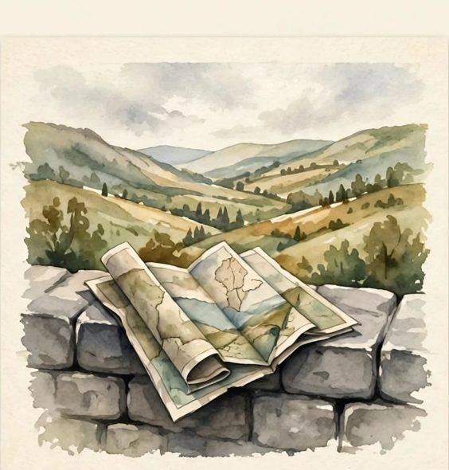
A folded map rests on a stone wall, its wrong side out, a green valley beyond.
The speech existed. The register is firm on this point, because the citizen wrote it, rehearsed it in the kitchen, timed it against the kettle, and folded it into an inside pocket with the confidence of a person carrying weatherproofing. Then the hall filled, the name was called, and the pocket, searched twice in front of witnesses, contained a receipt, a button, and an absence where eleven minutes of prepared remarks used to be. The citizen walked to the front of the room carrying nothing but a title and a heart keeping time like a metronome set by a drummer with opinions.
What came out of the citizen's mouth was not the speech, and the house has never pretended otherwise. It was shorter, plainer, and built on the spot out of the one true sentence the whole evening had been arranged to deliver. The citizen said that sentence first, since there was nothing else to say first, and then said two honest things around it, and sat down to applause that the register describes as startled and warm in equal measure. The lost pages were found that night in the other coat. They were beautifully written. They were never, on any later occasion, missed.
The Keeper keeps this memory in the sunroom rather than in a drawer because it is, at bottom, a story about enough. One true line turned out to be enough for a room; the eleven minutes would only have been its escort. The citizen has prepared thoroughly for every speech since, out of respect for audiences, and has also kept the habit of knowing the one sentence by heart, in case the pockets conspire again. The smile attached to the memory is not triumph exactly. It is the relief of a person who discovered, in public and at speed, that the floor of the thing was much higher than feared.
66Rain at the Picnic, Anyway
The picnic had been planned with the thoroughness usually reserved for sieges: a rug, two flasks, sandwiches cut on the diagonal, and a cake traveling in its tin like an honored guest. The sky, consulted that morning, had offered the bright, unreliable blue of a promise made by someone leaving the room. By the time the rug was spread under the tree, the first drops were arriving with the confidence of early guests, and by the time the sandwiches were unwrapped, the rain had properly begun, steady and unbothered, the kind that does not negotiate with afternoons.
Nobody went home. The register notes this plainly, because it is the whole story: nobody stood up, nobody apologized on behalf of the weather, nobody performed disappointment for the benefit of the afternoon. The party moved six feet sideways, under the tree's one dry acre, and ate the sandwiches damp at the edges with the grave concentration of people at a state occasion. The flasks were passed more often than planned. The cake, eaten in the rain in slices that required strategy, was pronounced the best of the summer, a verdict the house has no reason to overturn and several reasons to suspect.
Every picnic since has been measured against the wet one, and the dry ones keep losing, which puzzles new guests until somebody explains the scoring. A fair-weather picnic is an appointment kept; a rained-on picnic, survived in good humor, is a story with tenure. The sunroom keeps this memory because the smile in it belongs to everyone at the rug equally: no hero rescued the afternoon, the afternoon rescued itself, one damp sandwich at a time. The Keeper adds only that the tree is still there, and that the rug, dried and folded these forty years, has never entirely lost the smell of rain.
67The Map Read Upside Down
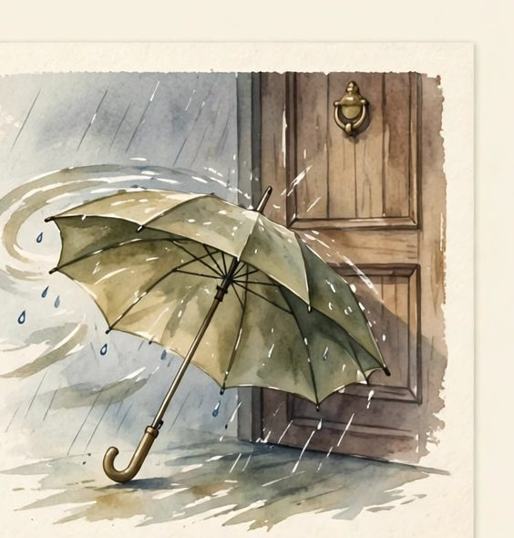
An umbrella turned inside out by the wind rests against a door, drying in the hall.
The map was a good map, and the register wishes that recorded before anything else, because maps suffer in stories like this one. It was printed clearly, folded honestly, and read, for the better part of a day's walking, entirely upside down. North kept a dignified silence at the bottom of the page. The river, which should have been approached by noon, was met instead toward evening, flowing with complete correctness in the wrong direction, and the citizen's confidence, that sturdy traveler, marched the party briskly away from lunch and toward a landmark that existed chiefly in the citizen's interpretation.
Discovery, when it came, came quietly: a signpost read twice, a church recognized from its other side, the sun caught standing in a quarter of the sky it had no business visiting. The citizen turned the map around in both hands, in full view of the expedition, and the expedition, to its lasting credit in the register, laughed first at the landscape and only afterward at the navigator. There is a right order for these things, and they found it. The walk home, correctly oriented, took half the time and is remembered hardly at all, which the Keeper notes is the usual wage of competence.
The map is kept, folded wrong side out in its drawer, as the sunroom's standing exhibit on the subject of certainty. It proves that a person can be completely wrong in method and completely right in company, and that the second of these will outlast the first in every retelling. The citizen has read maps carefully ever since, and tells this story against the citizen's own younger self with an even hand: the fool in it is forgiven, because the fool in it also carried the sandwiches, kept the pace cheerful, and turned the map around in public instead of inventing a shortcut. That last act is the one the smile is for.
68Lost, and Fed by Strangers
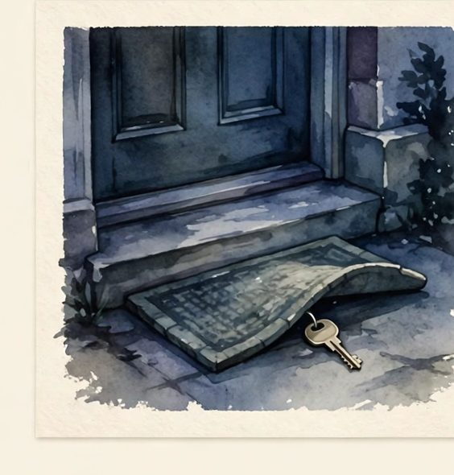
A doorstep at midnight, quiet and dark, a key half-showing beneath the mat.
Being lost, in the register's geography, is not the opposite of being found; it is the room before it, and some citizens spend longer in that room than others. The citizen was lost properly, in a district where the street names had been read twice already and meant nothing the second time either, with the light going and the day's last plan dissolving politely. What the sunroom keeps from that evening is not the lostness. It is the smell of soup arriving through a gate, and the discovery that a wrong turning can end at a stranger's fence with the light still on in the kitchen window.
The strangers did not make a ceremony of it, and the house has always thought their manners perfect on this point. Directions were offered first, as a formality; then, it being plain that directions would not feed anybody, a bowl was offered instead, and a chair, and the slower kind of conversation that happens across a fence when nobody is keeping the time. The citizen ate a soup whose recipe has been chased, unsuccessfully, for years. Some ingredients belong to one kitchen only. What could be carried home was not the recipe but the method: feed first, direct afterward, ask nothing about how a person comes to be lost at dinnertime.
The way home, once shown, was embarrassingly short, and the citizen has forgiven the district its geography long ago. What has never faded is the unreasonableness of the kindness: it owed the citizen nothing, explained itself not at all, and left no address behind it for thanks to follow. The Keeper files the memory in the sunroom because it improves with every visit, the way certain rooms improve when the sun reaches them late. A person who has been fed while lost walks the rest of life slightly differently, the register believes: more slowly past other people's fences, and with a readier hand on the gate.
69The Photograph Everyone Hated Then
The photograph was taken at the exact summit of the haircut era, which is the first of its several crimes in the eyes of its subjects. It caught the whole table mid-blink and mid-sentence, with one citizen laughing at something outside the frame and another examining a fork as if it had just said something unforgivable. When the prints came back, the verdict was unanimous and severe: nobody in it looked like anybody. It was exiled to the back of the album, behind the landscapes, where the house keeps its evidence rather than its portraits. There it waited, in the dark, with the patience of prints.
Years did for the photograph what no retake could have done. The hair grew out; the forks were forgiven; the faces in the frame stopped being failed portraits and became, simply, the people as they were on a Tuesday when nobody was posing. The Keeper observes that this is the secret employment of all bad photographs: they are not kept for how anyone looks, but for the unguarded minute they refused to tidy. Posed pictures show the family as it wished to be introduced. This one shows the family at home in itself, caught mid-laugh and mid-blink, unbothered, unarranged, and entirely alive.
It is now, by general consent, the best photograph in the album, and the first one new visitors are shown, with the haircut explained as historical context. The citizens who once voted to exile it now compete to tell what each face was doing. This reversal is the sunroom's favorite kind: nothing in the picture changed, and everything did. The print is the same; the years around it ripened. The register's note beneath it reads, in the Keeper's hand, simply: kept. Some memories need defending. This one only needed keeping, in the dark, until the light in the room changed enough to show what it had been holding all along.
70Broke, and Rich in Company
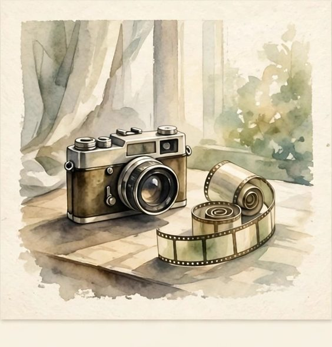
A camera rests on a table beside a curl of blank film, in window light.
The register keeps one page for the season of empty pockets, and it is not a sad page, which surprises citizens who turn to it expecting the usual weather. The money that year was counted in coins and the meals were built, with real ingenuity, out of whatever the market was giving away at closing time. And yet the house was full. That is the entry's whole argument, written in the Keeper's plainest hand: the table that season seated more people, more often, than it has in several richer years, because when nobody can afford to go out, everybody comes in.
The riches were of the non-transferable kind: a friend who could make soup out of an onion and a rumor, another who owned a guitar and a bottomless repertoire of other people's songs, a third whose contribution was arriving exactly when the evening needed rescuing and leaving before it needed it again. Nothing could be banked. Nothing could be sold. The register has audited richer households and found them, on paper, better furnished and, on certain evenings, considerably lonelier. This is not an argument for poverty, and the house does not make it. It is a record of one season when company did the work that money usually gets the credit for.
The citizen does not romanticize that year, and the sunroom would not allow it if the citizen tried: the worry was real, the arithmetic was nightly, and some of the rooms in that house were cold in every sense. But the smile is real too, and it belongs to the full table, not to the empty purse. The two truths share the page without quarreling, which is more or less the sunroom's whole constitution. When the prosperous years came, the citizen kept the habit of the crowded table, and counts that habit, in the register's final accounting, as the only fortune that season ever actually paid out.
71The Mistake That Introduced Us
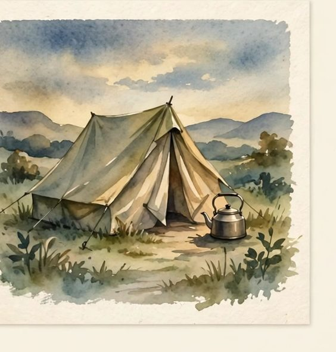
A tent pitched slightly crooked at evening, a kettle set beside it on the grass.
Every long friendship in the register has an official beginning, polished by retelling, and most of them are inaccurate. This one began with a mistake: a wrong door knocked on in good faith, a name misheard and answered to, a message delivered to the citizen who was never meant to receive it and who, having received it, replied. The house files the paperwork under errors, where it belongs, and keeps the friendship itself in the sunroom, where it also belongs. Between the two filings lies the whole of the story, and the citizen would not correct a single clerical detail of it now.
What the mistake understood, arriving ahead of all intention, was simply that these two citizens would get along. It took a corridor, a wrong number, and a case of mistaken errand to arrange what years of correct introductions had failed to schedule. The first conversation was conducted entirely inside the confusion, each party assuming the other was somebody else, and it went so well that when the identities were sorted out, an hour later, it seemed a pity to let the paperwork interrupt. So the friendship continued under its true names, carrying its false start the way certain houses carry a crooked first brick, proudly and forever.
The Keeper is asked, occasionally, whether the sunroom recommends mistakes as a method of meeting people, and gives the house's usual answer: the room keeps evidence, not instructions. But the entry stays near the front of the register, because citizens who visit the sunroom worried that their own beginnings were too accidental to be trusted find it steadying. Beginnings are allowed to be untidy. A friendship is not audited by its first hour. And when the two citizens in this story tell it now, they still argue happily about whose mistake it was, each claiming the honor, neither willing to surrender the credit.
72Time Is the Editor of Comedy
The register closes its section of mishaps with a ruling, entered after long consideration of the evidence: almost nothing in this hall was funny at the time. The wrong train was a nuisance at speed. The locked door was cold. The fallen cake was, for one suspended minute, a small domestic tragedy with witnesses. Comedy arrived later, by post, sometimes years later, and the house is careful to credit the courier. Time is the editor of comedy, and like all good editors it does its work invisibly: a cut here, a softening there, until the story can be told in a kitchen without anyone flinching.
The editing is not a falsification, and the house insists on the distinction. Nothing is invented; nothing that mattered is removed. What time removes is only the sting, which was never the point of the story anyway, though it entirely occupied the point of view at the time. The haircut's victim and the haircut's audience become, eventually, the same citizen, and that citizen tells the tale with an even hand. The register has a test for when the editing is complete: the story can be told in the hearing of everyone it happened to, and the loudest laugh in the room belongs to its former victim.
Not every mishap completes the journey, and the sunroom keeps no schedule for them and issues no reminders. Some entries in this hall are still in draft, still ripening in the drawer, and the Keeper leaves them there without comment; a smile ordered before its time is only a grimace with good publicity. The ones that have arrived, though, are load-bearing. They let a citizen hold a whole past, the clumsy and the graceful together, without having to exile the clumsy parts to keep the peace. That, the register concludes, is the real work of the comedy: not mockery, and not forgetting, but citizenship, extended at last to one's own younger self.
73The Umbrella Moved Toward Me
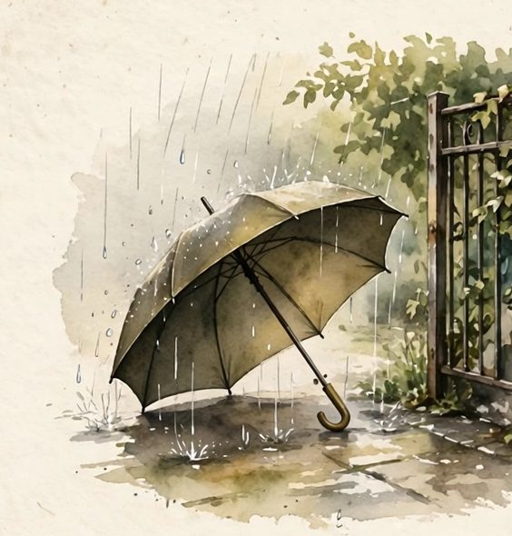
An umbrella stands propped open over a dry patch of pavement by a gate, while rain falls all around it.
Rain divides a pavement into citizens who planned and citizens who are learning, and the citizen, that day, was enrolled in the second school. The rain had arrived the way city rain arrives, all at once and from a sky that had looked merely thoughtful a minute before, and the citizen was standing in it outside a gate with both hands full and no third hand for weather. Then the umbrella moved. That is how the register records it, because that is how it was experienced: not a person approaching, not a speech beginning, just a wide dark canopy changing its address in the sky, and dryness arriving overhead like a change of management.
The stranger did not make a production of it, and the house has preserved the stranger's technique as carefully as the kindness itself. The umbrella simply tilted, the stranger's step adjusted by half a pace, and the two citizens walked the length of that wet street in a shared dry country roughly the size of a hearth rug. Conversation was not required and was not attempted, beyond the one sentence about rain that all citizens carry for such occasions. At the corner the canopy tilted back, the stranger continued, and the citizen arrived at the day's errand dry-shouldered and quietly reorganized about the nature of streets.
The Keeper files this among the smallest entries in the hall of kindness and, on certain days, thinks it might be the load-bearing one. Nothing was given that could be weighed; the whole gift was a tilt, a matter of inches, held steady for one street. But the citizen has never since stood in rain beside a stranger without the memory arriving, and with it a small, permanent adjustment of expectation: that help in this world often travels without announcement, under other people's umbrellas. The smile, when the story is told, is mostly amazement that so little could be done so well, and that it is still being received, decades later, in installments.
74A Seat Given Without Ceremony
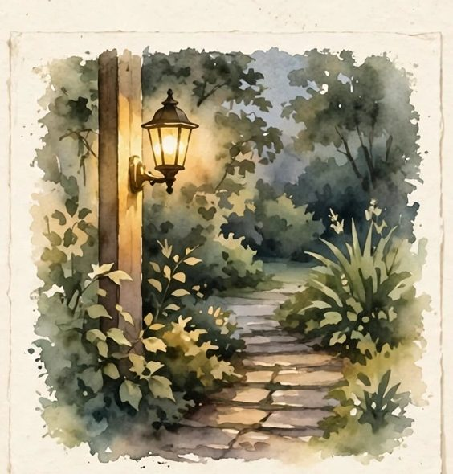
A porch light burns at dusk above a garden path, left on for someone still out.
The hall was full in the way of halls where something is given away free: every seat taken, the latecomers arranged along the wall like punctuation. The citizen, arriving with the particular lateness that attends all journeys involving two buses, took up a position against a pillar and prepared to attend the evening standing, in the manner of a candlestick. Then, three seats along the row, an elderly citizen rose, gathered a coat, and performed the entire ceremony of departure: the nod, the shuffle, the pointed look at the empty chair. No announcement was made. The seat was not offered. It was simply vacated in the citizen's direction, which the register records as diplomacy of a high order.
It matters to the house that the kindness was disguised as something else, because disguise is what made it acceptable to everyone present, including the citizen. A seat surrendered with speeches would have required gratitude of a size the evening could not hold; a seat merely left, with a look that said the leaving was overdue anyway, cost nobody any dignity at all. The elderly citizen departed at the pace of a person with somewhere better to be, which may even have been true. The citizen sat down with the peculiar gratitude of the rescued-by-indirection, and watched the rest of the evening from upholstery, like a person restored to citizenship.
The register keeps a short list of kindnesses that work by misdirection, and this one stands near its head, because the technique is available to everyone and ages so well. The citizen has used it since: the door held while looking elsewhere, the last slice praised and declined, the seat given up for an urgent appointment with the corridor. Each use is a small repayment into an account that has no named creditor, which the Keeper believes is exactly how such accounts are meant to run. The smile in the memory is the look that came with the empty chair: a whole paragraph of kindness, delivered in one glance, with the punctuation removed.
75The Note in the Lunchbox
The lunchbox was not an elegant object, and the register describes it with the respect due to working equipment: tin, dented at one corner from an encounter with a bicycle, its lid printed with a pattern that decades of thumbs had polished to a ghost. It traveled to school, to work, to the tops of hills, and it opened every day at noon with the small tin announcement of a meal packed by somebody else's hands. What the citizen found inside it, on a day that has kept its date in the register when grander days have lost theirs, was a note. Folded once. Written in pencil. Four words long.
The note did not say anything that could not have been said at the door that morning, and the Keeper has always thought this was the genius of it. It was not information. It was ballast: four words of ordinary affection, weighed and packed with the sandwiches, meant to be found at the hour when the day is longest and the citizen farthest from home. Whoever wrote it understood the geography of a day precisely: that noon, not morning, is when a person needs to be reminded that a kitchen somewhere is thinking of them. The sandwiches were eaten. The note was kept, which was also understood, and also intended.
The note survives, softened to the texture of cloth, in a drawer the sunroom is permitted to mention but not to open for visitors. Its four words have been read so often that they no longer need reading; the citizen can feel them through the drawer front, in the way of all well-kept things. The Keeper files the memory here, among kindnesses, rather than in the hall of faces, because its lesson is about method: that love, properly packed, travels. It does not have to be large, or new, or even surprising. It has to be in the lunchbox, at noon, on the ordinary day when it will be found.
The Sunroom Desk
One desk receives all correspondence for this house — questions, corrections, and word of any memory that still makes you smile: a face, a place, a kindness received, a mishap that turned kind. It is read in the order it arrives.
76Someone Waited With the Light On
A lunchbox lies open with a folded blank note inside, an apple resting beside it.
The journey home that night was supposed to take until ten, and it took until nearly one, through weather and connections that failed in sequence like a row of tired dominoes. The citizen walked the last dark stretch in the particular loneliness of a person who believes the whole world has gone to bed without them. Then the corner turned, and the light was on. Not the streetlamp, which does its work for everyone. The porch light, the one with the amber shade, burning above the door of the citizen's own house, in a street where every other window had gone dark hours before. Somebody had waited up, and had left the evidence burning.
The house does not record what was said inside that door, because the sunroom's charter covers the light, and the light is sufficient. What the light said, from half a street away, was exact: the lateness had been noticed, worried over in the measured way of households, and answered not with a lecture prepared but with a lamp maintained. Somebody had stayed awake inside that light, or woken for it, and had kept the kettle's counsel and the door unlocked against a key turning at an hour when keys sound like apologies. The citizen has forgotten the journey's every delay since. The light has not been forgotten at all.
In the years since, the citizen has kept porch lights of various designs burning for various travelers, and considers it among the plainest technologies of love ever devised: a switch, a bulb, and the refusal to let the last stretch of somebody's journey be walked in the dark. The register's entry is brief because the act was brief, an instant at a corner. But citizens who turn to this page in the sunroom tend to stay a while, the Keeper notes, the way travelers linger in doorways. A waited-for person walks differently the next day. That is the finding. The rest is just a light, left on.
77The Debt I Was Told to Forget
A coat hangs by the door, lent and kept ready, its pockets empty and brushed clean.
The register keeps a ledger for kindnesses, as it keeps one for everything, and most of its entries balance in the small coin of returned favors. One entry does not balance, and the Keeper has been instructed, by the creditor in person, to stop trying. The debt was of the real kind: money, lent in a thin season, in an envelope, with the ease of a person handing over an umbrella. It was not a fortune. It was exactly a fortune's worth at the time, which is the only honest unit in which such things are ever measured in this house. The citizen noted the amount, the date, and the terms: none.
Repayment was attempted in installments of dignity: an envelope returned when the season fattened, and refused with the envelope unopened on the table between them like a chess piece neither player would move. Attempted again, in kind, with work and goods, and accepted only in the coin of dinners, which the creditor pronounced, at the third dinner, to be interest exceeding the principal and the matter therefore closed. Closed, the creditor said, in the tone of a person laying down a hand of cards. The citizen argued once, for form's sake, and lost gladly, and the ledger was shut on the only unbalanced page it contains.
Forget it, the creditor said, in the end, as a complete financial policy, and the citizen has spent the years since discovering how much work forgetting of that caliber requires. The debt is remembered precisely because it was ordered forgotten; the order itself became the gift's second half. The Keeper's note in the margin is the sunroom's whole doctrine of such accounts: some kindnesses can only be repaid forward, to other citizens, in other thin seasons, in envelopes. The citizen keeps a small readiness for this, a standing fund of attention, and considers the unbalanced page not a failure of bookkeeping but its finest entry.
78A Coat Lent in Earnest
The cold arrived a week before the citizen's coat did, the old one having retired without notice at the seams, and the new one existing chiefly as a plan. The register records the interval plainly: a borrowed week, in weather that inspected every layer a person owned. What filled the interval was a coat that arrived over a fence, so to speak, within the hour of the need becoming known: heavy, dark, smelling faintly of another house's woodsmoke, and lent with an earnestness that the citizen understood at once to be the entire point. It was not lent casually. It was lent the way tools are lent by people who keep them sharp.
A coat lent in earnest comes with instructions, and the citizen received them standing in the doorway: which pocket holds the gloves, how the third button wants patience, and the standing order that it was not to be worried over, spilled on, or treated as a guest in its own week. Wear it like yours, the lender said, which the house considers the summit of the lending art, since most lent things travel with an invisible escort of worry. This one traveled alone and worked hard. It went to work, to market, to one funeral and one christening, and kept the citizen warm in all weathers of that week, social and otherwise.
It was returned brushed, with the gloves in the correct pocket and a debt of warmth that the citizen has been repaying, in other coats, ever since. The Keeper notes that the memory is kept in the hall of kindness rather than the wardrobe, though it concerns a garment, because its subject was never the coat. Its subject was the discovery that a person can be, for one cold week, literally covered by somebody else's forethought. The citizen still checks the seams of coats in shops with a professional eye, and still owns nothing quite as warm as the borrowed one, which the register declines to explain in terms of wool.
79The Repair Done for Free
A bicycle wheel, repaired and true, leans by the wall, the tools laid in a row on a cloth.
The bicycle failed on a Sunday, which the register notes is the traditional day for machines to file their resignations, and it failed comprehensively: a wheel gone untrue, a chain off its manners, the whole apparatus expressing, in the language of bicycles, a wish to be walked home. The citizen walked it home, the three miles being of the kind that expand when pushed. At the gate, the neighbor was already looking over the fence with the expression of a person reading a familiar newspaper. Bring it round in the morning, the neighbor said, in the tone of weather being forecast.
The repair took an hour and was conducted as a small masterclass that the citizen was not charged for attending: the wheel trued spoke by spoke with a key no bigger than a thumbnail, the chain persuaded home, every adjustment explained in the plain speech of a person who believes knowledge should travel downhill to whoever needs it next. When the citizen attempted payment, in money and then in the currency of future favors, the neighbor waved both away with a spanner still in hand. Payment, in that yard, had already occurred, and it consisted of the pleasure of a machine returning to its duty under skilled hands.
The citizen rode that bicycle for six more years, and the Keeper can certify that it never again failed on a Sunday, as if it had signed something. The memory is kept in the sunroom because it changed the citizen's understanding of what a repair is: not a transaction with a machine at the center, but a visit, with the machine as the excuse two citizens found to be useful to each other for an hour. The citizen has since repaired things for strangers with, the register hopes, the same wave of the spanner. Some debts are only payable in true wheels, given away. The ledger balances itself, in yards, over years.
80Carried Bags, Carried Day
A door stands held open by a wedge of wood, warm light coming through from the hall.
The bags were the weekly marketing of a household that shopped as if winter were a rumor with good evidence, and they were being carried, in relays, up the long stair of a building whose lift had retired in a previous decade. The citizen's arms had reached the stage of negotiation known to all carriers of bags: the handles writing their memoirs into the fingers, the stair reconsidered landing by landing. On the second floor, without a word of preamble, half the weight vanished. A fellow citizen of the stair, coming down with empty hands and the timing of a stage manager, had simply taken two bags and reversed direction.
They climbed together in the silence that the register most admires, the silence of people who have agreed not to make the thing a story while it is still happening. At the citizen's door the bags were set down with the care of eggs being returned to a nest, the helper accepted thanks with one nod of exactly the correct size, and continued downward, restored to an original errand that the citizen never learned. The whole kindness occupied perhaps ninety seconds of a Tuesday. The citizen has thought about it, in aggregate, for years, which the Keeper offers as the true exchange rate of such acts: seconds to give, years to finish receiving.
The sunroom keeps this entry under a title with a double sense, and the doubling is deliberate. The bags were carried, certainly; the groceries arrived, the stair was climbed, the day proceeded. But the day was carried too, in the other sense, lifted at its heaviest landing and set down gently at a door. The citizen has since made a practice of descending stairs with attention, empty hands kept ready, in buildings where somebody is always climbing with more than arms should hold. It is not much of a practice, as practices go. It weighs almost nothing. That, the register concludes, is rather the point of it.
81The Door Held by a Stranger
Of all the kindnesses filed in this hall, the held door is the one the citizen reports most often, and it is easy to see why. It costs the giver almost nothing: a pause, an arm extended, a few seconds surrendered to a stranger's errand. Yet the memory of it outlasts kindnesses that cost far more. The register's explanation is simple. A held door is help that arrives exactly at the moment of need, in the middle of an ordinary day, from someone who owed the citizen nothing and asked for nothing, not even thanks. It is goodness with no paperwork attached to it, and the house files it first for that reason.
The scene itself is usually unremarkable, which the Keeper counts as part of its durability. The citizen's arms are full — parcels, a bag giving way, a child of bags and boxes stacked against the chin. Rain is beginning, or the wind is practicing. The door is heavy in the way of doors built by pessimists. And someone is simply there, already holding it, already turning back to their own day, treating the rescue as a thing too small to mention. The citizen could not describe that face now, and the register notes that the face was never the point of the entry.
What remains, decades later, is the gesture and the weather and a brief astonishment that the world had staffed that doorway at the right second. The smile it still produces has a particular flavor: it cannot be repaid, so it stays open in the memory the way the door itself stayed open. It proves nothing about the whole of the past, and this house never asks it to. It is evidence of one unrecorded decency among the thousands the world performs daily without witnesses. The Keeper files it without a name attached, and the citizen smiles at a kindness that belonged to no one in particular, and therefore, in the register's arithmetic, to everyone.
82Mercy in Small Denominations
A thermos and two cups set out on a garden wall at working height, waiting in the sun.
Mercy, in the experience of this house, rarely arrives as a grand rescue with trumpets and paperwork. It comes in small denominations. The extra cup poured without being asked about. The fare quietly covered when a pocket produced only lint and apology. The sharp word an overseer decided not to say. The register keeps a drawer of such small change, and the citizen, looking through it, finds that the sum of a life's received mercy is mostly counted out in coins, not notes — and that the coins, somehow, add up to the larger figure.
Consider the thermos on the garden wall, that modest monument. Someone was working nearby — digging, mending, building — and someone else, passing or watching, set out not one cup but two. The second cup is the entire doctrine of this block. It says, without speech, that the worker is not a machine to be fueled but a person to be joined, and that the break in the labor is a small country with room in it for company. The tea itself is soon forgotten. The arithmetic of the cups is remembered for fifty years.
This is why such memories still make the citizen smile: small denominations are spendable anywhere and never devalued by time. A cup, a minute, a held-back sentence, a coin of patience at a counter — the currency is accepted in every decade of a life. And the citizen who received it learns to carry the same currency, in the same modest units, against the day a stranger's pocket comes up empty. The Keeper notes that mercy scales down gracefully without losing its nature, and that the smallest unit of it still spends, in any company, exactly like mercy.
83The Kindness I Never Repaid
A small bunch of flowers left on a doorstep at dawn, the step still cool, the street still empty.
Every register kept honestly has one unpaid account, and this house keeps its own without shame. Somewhere in the citizen's past stands a kindness received at a moment when repayment was impossible — the giver moved away, or died, or was a stranger seen for exactly one afternoon — and the debt, if debt is even the word, was never settled. For years the citizen carried it the way one carries a letter never sent: aware of it, occasionally sorry about it, unwilling to throw it away. The Keeper's ruling on the matter is recorded in the margin, and it is a merciful one.
The flowers on the doorstep stand for all of it. Help that arrived unsigned: a meal left where it would be found, a bill quietly settled by hands that left no name, a ride given in the worst week and refused all fuel money. The citizen made inquiries once, in the diligent season after, and the trail dissolved politely, the way trails do when a giver prefers the giving to the gratitude. The register records the failed investigation without distress. Some kindnesses, the entry concludes, are addressed to a season of a life rather than to a ledger, and they refuse delivery receipts on principle.
So the account stays open, and the doctrine of this house is that an open account of this kind is not a debt but a deposit. The smile is the interest it continues to pay. The citizen smiles because the books of a life were never meant to balance to zero; a life whose every kindness was repaid would be a tidy and airless place, all doors closed, nothing owing, nothing flowering. The remainder — this one warm unsettled sum — is what keeps the register human. It will be settled in the only currency available, forward, and the next room of the hall keeps that story.
84Passing It On, Years Later
The final entry in this hall belongs to a later year, and the citizen almost missed its significance while it was happening. The hands were free this time; the arms were empty; the door was heavy and someone else was coming through it loaded. So the citizen held it, and poured the second cup on another occasion, and left the unsigned kindness where it would be found — and recognized each gesture in the middle of performing it, the way one recognizes a family face in a crowd. It was the old kindness, out again in new clothes. The register calls this forwarding, and accepts no other repayment.
It rarely matches the original in size or shape, and the Keeper insists this is correct. The debt was a door held in the rain in one decade; the repayment is a ladder lent, a lift given, a light left burning in another decade, to a person who was not yet born when the original account was opened. The sums do not line up. They are not meant to. Kindness forwarded keeps its value the way a story keeps its warmth in the retelling — changed in every detail, intact in the one detail that was the point.
The smile in this memory is therefore doubled, and the citizen savors both layers without hurrying. There is the stranger of long ago, gone beyond thanking, receiving the thanks at last in the only direction time permits. And there is the stranger of today, walking through the held door with full arms, perhaps smiling years from now in a doorway of their own. The Keeper closes the hall with the observation that kindness is the only property in the whole house that increases by being given away, and that the citizen, once a debtor in this register, now appears in it — modestly, in small denominations — on the other side of the page.
85The Test I Passed at Last
A finish line of plain string strung between two garden posts, trembling a little in the morning light.
The title of this block insists on its adverb, and the register honors the insistence: at last. This is not the story of a test passed on the first confident attempt. It is the story of one failed, or feared, or postponed across a season of evenings — prepared for again with a pencil worn short, and then passed without glory. No trumpet attended. There was only a result, read twice to be certain, and a quiet rearrangement of the furniture of the citizen's opinion of themselves. The triumph is filed early in this hall precisely because of its modesty: it asks so little, and it gives back so much.
What the memory keeps is not the score, which the citizen could no longer recite accurately if the house depended on it. It keeps the morning: the desk, the window, the particular quality of the light at the hour of reckoning, the walk home afterward with the result folded in a pocket like a warm coin. Others might rank the achievement small against the world's examinations. The register ranks memories by a different instrument — by the smile they still produce on an ordinary Tuesday — and by that instrument this one files remarkably high, and goes on filing higher as the years polish it.
The doctrine is simple and the Keeper states it without decoration: a late pass is not a lesser pass. The string finish line in a garden is not a stadium tape, and a citizen's triumphs are not required to impress a crowd in order to be real. What the memory offers, whenever the citizen takes it down, is evidence in its plainest form — proof that the citizen once doubted, prepared in the dark, and finished in the light. Evidence does not expire. On grey days the proof still works, and the smile it produces has the steadiness of a thing that was earned the slow way, which is to say, earned entirely.
86The First Wage, Spent Standing Tall
A blank framed sheet hanging slightly proud on the wall, catching the light like something earned.
The first wage was small in amount and enormous in standing, and the register keeps it filed ahead of far larger sums that arrived later and meant less. The memory is exact about the ceremony: the envelope, or the counted notes, or the figure appearing where figures appear — and then the walk through the world as a newly minted citizen of it, one of the people who pay their own way. The sum itself has been forgotten with suspicious precision. The posture has not been forgotten at all. The citizen still remembers exactly how tall the world looked that day.
And what was bought with it? The register declines to itemize, because the purchases were never the point — though it notes, with approval, the classic distribution: something for the house, something for someone else, and something frivolous defended with the unanswerable dignity of the earner. It was spent standing tall, which is a manner, not a posture of the spine. The framed sheet on the wall of this room hangs blank because the paper proof is long gone; the frame remains, and the frame is the relic. It says that once, for the first time, work turned into choice in the citizen's own hands.
Every later wage, the Keeper observes, arrived in a world the first one built. That is why the memory still makes the citizen smile when larger figures leave them cold. The smile travels across the years to the young earner without a trace of condescension — peer to peer, colleague to colleague — because the house understands that the distance between the first wage and the last is traveled entirely on ground the first one purchased. A teacup holds as much light as a window. An honestly earned small beginning holds as much standing as a fortune, and lasts, in this register, considerably longer.
87A Song Sung in Front of People
The register keeps a short list of brave small things, and singing in front of people stands high on it — braver than several deeds involving ladders. Note that the title makes no claim about singing well. The triumph filed here is not quality but offering: a voice produced in company, unarmored, in a room where it could be heard by everyone present, while the citizen's heart kept its own enthusiastic percussion somewhere in the front row of the chest. Thousands decline this experience across a whole lifetime of showers and empty cars. The citizen, once at least, did not decline it.
What the memory preserves is the sequence, in kind order. The first note arriving, to the citizen's private astonishment, more steadily than feared. The room's ordinary, unglamorous kindness — people settling, listening, permitting. The middle of the song, where the singer briefly forgot to be afraid because the song itself needed steering. And then the last line, landed, and the moment after it: that held fraction of silence before a room responds, which in memory lasts about a year. Whether applause followed is recorded elsewhere. What is filed here is that the song was finished, in the open, by its singer.
The doctrine of this house counts offered things among triumphs: the song sung, the speech attempted, the dish carried trembling to a shared table. Perfection is not the currency of this hall; willingness is. And there is a final grace the Keeper records with pleasure: in memory, the voice that trembled has grown strangely steady. Time has done the rehearsing the citizen never had time for, and the song now sings itself cleanly whenever it is recalled. The citizen smiles at the door of this room the way one smiles at an old photograph — not because every detail flatters, but because everything in it is true.
88The Race I Finished, Not Won
A garden row of beans climbing their poles in good order, green everywhere, in no hurry at all.
The race is remembered by its end and not by its order of finish, and this arrangement suits everyone concerned. The register's account runs as follows: the citizen entered without illusion, in the plain kit of the unpromising, and ran within their means and their breathing. Somewhere behind them, unreached all day, was the line that a season earlier would have seemed addressed to other people entirely. They crossed it. Last, or near enough that the distinction requires documents to settle — the placing was recorded somewhere official and has been mercifully lost. The finish, fortunately, was recorded in the citizen, where it remains in perfect condition.
The memory's furniture is kept in good repair: the morning of it, the number pinned and re-pinned, the sounds a crowd makes when it is mostly applauding strangers, the water at the end tasting like a sacrament of the ordinary. A winner passed with their own weather about them — sun, presumably, and laurel — and the citizen's weather was also fair, which the house insists on recording. Several weathers can belong to one event, and none of them cancels the others. The citizen's share of that day was a finish honestly come by, at a pace the body had agreed to in advance and honored to the last meter.
Finishing, the doctrine runs, is the citizen's own category, not a consolation division invented by the kind-hearted. The house does not file this memory below victories; it files it among proofs. And the beans on their poles are admitted as the room's emblem with the Keeper's blessing: they do not race the pole, they do not envy the row, they climb at the pace of beans and finish the season entire. The smile arrives whenever the citizen recalls having done the same — having promised the body a distance, and kept the promise, and come home tired in the honorable way.
89Fixed With My Own Hands
A ring of keys laid out on a table in a shaft of light, each one kept, each one known.
The hall of triumphs gives honored space to the repaired thing, and the register's account of this one has the satisfying density of a good inventory. The citizen stood before something broken — a chair, a tap, a bicycle, a lock — armed with a borrowed tool, an optimistic manual, and a well-founded suspicion that a professional would laugh at the result. An afternoon was surrendered. A vocabulary was expanded. And the thing, at the end of it, worked: the drawer slid, the tap fell silent, the wheel ran true. The smile this memory produces is located partly in the hands, which remember their own competence.
The sequence is preserved with a historian's care: the attempted reading of the fault, the wrong part removed first, the small contained disaster, the pause for tea during which the mechanism, left alone, seemed to reconsider. Then the moment of confession, when the assembly admitted its logic and the citizen understood that most broken things are not mysteries at all — only arrangements waiting to be read patiently, the way a letter in a familiar hand is read. The Keeper notes that repairs teach a doctrine no purchase can deliver: the world is more mendable than it advertises, and the citizen is more capable than the citizen's estimate.
Why does it still warm the citizen, years later, among larger achievements? Because every later breakdown is met by someone who possesses evidence. The keys on the table stand in this room for all the small sovereignties — the house answerable to its keeper, the machine answerable to its reader. The register records the repair without inflation: it held, mostly; and where it did not hold forever, it held long enough to be instructive, which the house counts as a subspecies of holding. The triumph is teacup-sized and titan-strong, and the citizen's hands, asked about it, answer before the citizen can: we did that.
90The Letter That Said Yes
Among the kept papers of a life, one letter is remembered chiefly by its answer, and the whole house knows which letter is meant. The citizen had applied, or auditioned, or proposed, or simply asked — and then waited, in the particular weather of waiting, while the days performed their ordinary indifference. The letter arrived on a morning like any other, thin as any other, indistinguishable in the hand from bills and circulars. The register preserves the protocol of its opening with respect: tea made first, courage gathered, the envelope regarded for one held minute like a small verdict that had not yet decided to be kind.
It said yes. The memory keeps that sentence plain and undecorated, in the manner this hall prefers for its facts. Everything that followed — the work, the years, the consequences good and otherwise that grew from that yes — belongs to other rooms of the house, several of them drafty. This room keeps only the moment of the reading, and the way the kitchen changed temperature around the citizen standing in it. The Keeper, who has filed many letters in both directions, notes that the yeses are not more numerous than the nos. They are simply better lit, and they are allowed to be. That is not favoritism; it is architecture.
The doctrine, in the end, honors the asking more than the answer. Every yes in this register began as somebody's risk of a no: the form sent despite the odds, the question put aloud despite the nerves, the future requested in writing. The citizen smiles at having asked — at the earlier self who sealed an envelope containing, in effect, a request for a different life, and posted it, and waited. The smile is the interest on that courage, still paying. And the envelope against the teacup remains the room's emblem: an ordinary object, on an ordinary morning, behind which an entire biography was standing quietly in line.
The Sunroom Desk
One desk receives all correspondence for this house — questions, corrections, and word of any memory that still makes you smile: a face, a place, a kindness received, a mishap that turned kind. It is read in the order it arrives.
91A Garden That Actually Grew
A guitar leaning by a chair in a small warm room, the light amber, its strings at rest.
The comedy of this triumph lives in its adverb, and the register would not change a letter of it: the garden actually grew. Earlier gardens, in the citizen's long horticultural record, were mostly intentions — seeds in hopeful packets, plans made grandly in April, rows of resolutions photographed by optimism and harvested by August as distinguished weeds. This time, the Keeper attests with a straight face, things came up. Beans happened. Peppers were not a rumor. The citizen's amazement, still fresh after all these years, is the true heart of the memory, and the house guards it carefully.
The daily liturgy of that season is preserved entire: the watering at dusk, the inspections conducted with a landowner's gravity, the first true leaves received like dispatches from a distant and improving front. Neighbors offered the courtesy of not appearing surprised, at least in the citizen's hearing. The harvest, when it came, was modest by any market measure and magnificent by the only measure this hall recognizes — it existed, it was carried indoors in both hands, it was eaten with ceremony. The register records the menu in the margin, in pencil, the way one records the names of minor royalty.
The doctrine of this room is a defense of the citizen's luck, which earlier failures had talked them into treating as a fixed and stingy quantity. Some seasons fail for weather nobody commands; some succeed because attention was paid daily, in small denominations, at the hours when attention is easiest to skip. The smile arrives with a gardener's humility folded inside it: the citizen provided the care, faithfully and on schedule, but the growing was done by the garden. That division of labor is the memory's peace. The citizen did their part — and for once, memorably, the world did its part back.
92The Day I Was Chosen
A repaired chair standing square and true beside a workbench, its mended leg plain to see.
To be chosen is a distinct weather in a life, and the register keeps the day of it under glass at eye level. The citizen was picked — for the team, for the task, for the confidence, for the place at the table — and the picking answered a question that had been carried around unasked for years: whether they were wanted specifically. Not tolerated, not included by arithmetic, but wanted by name, on purpose, in preference to the whole unchosen field. The Keeper files this among the tender triumphs, because chosenness, unlike most victories, cannot be seized. It can only be received, and the receiving changes the posture of a person for good.
The details are small and exact, as the register prefers. The voice that said the name, in the tone of someone reading a list they had written themselves. The citizen's attempt to look unsurprised, unsuccessful in every particular the face is responsible for. The walk home, rehearsing the moment at intervals, like a tune that has just been learned and might be forgotten if not hummed. And the evening after, in which ordinary objects — a kettle, a chair — stood in a strangely favorable light, as if the whole house had also been chosen, and was trying to behave accordingly.
The doctrine adds one gentle warning, which the citizen has always heeded: this memory is not to be spent as a verdict on all the unchosen days, which have their own rooms and their own weather. One choosing is evidence, not a census. Nor is the smile permitted any triumph over the unpicked, whose names were simply read on other days, in other rooms. What remains is gratitude with good posture. The citizen stood a little straighter that day, in a way that could be measured by tailors, and the Keeper's final note observes that some of the straightness never left — it is in the citizen's walk still, on the way to buy bread.
93Applause in a Small Room
The applause was not large, and the register is precise about this, and proud of the precision, and would correct anyone who inflated the figure out of kindness. A dozen people, perhaps fewer. A small room, where every handclap could be individually heard and identified, the way individual raindrops can be heard in a quiet house. Something had been performed — a reading, a song, a toast survived at altitude — and then that sound arrived: brief, unamplified, unanimous. No recording made since, in halls built for thousands, has matched it for warmth. The Keeper files the acoustics under evidence and closes the drawer gently.
Why does small applause outlast large? Because in a small room there is nowhere for generosity to hide. Each person clapping is visibly, personally choosing to clap; the citizen remembers hands, not noise — this one's ring, that one's hesitation overcome. A stadium's approval is weather. A small room's approval is correspondence. The house has a doctrine for this, borrowed from its own architecture: a teacup holds as much light as a window, and a small room can hold all the recognition a person requires for a decade, with some left over to lend. The citizen has been drawing on this particular account for years, and it is not empty yet.
The citizen is not required — the house states this plainly, for the record — to be embarrassed by how much it meant. Gratitude is not graded by the size of its occasion in this register, and a person who was nourished for years by twelve people's handclaps is not a small person but an efficient one. Years later the smile arrives complete with its soundtrack: that particular wooden, upholstered, unrepeatable sound of a small room approving. The Keeper's marginal note, in the careful hand, reads simply that it was enough. And enough, the hall maintains against all comers, is a triumph in its own right.
94The Shot That Went In
A letter lying on a doormat in good light, its envelope blank, the door newly closed behind it.
Every life keeps one improbable accuracy in a warm frame, and this is the citizen's. The shot — at a hoop, a goal, a target at a fair, the register declines to specify because the citizen's retellings have never agreed — was attempted in the usual spirit of participation over expectation. Witnesses existed. The Keeper insists on entering this detail formally, because the citizen, alone with the memory, has occasionally wondered: there were witnesses, plural, unimpeachable, still living. And the ball, or arrow, or stone went precisely where physics rarely permits the citizen's hopes to travel. It went in.
The memory is preserved at the speed of its happening, which is one of its pleasures. The release. The arc, during which time performed its trick of thickening. The held half-second in which the whole company knew, the way a whole room knows a note is coming before it is sung. Then the sound of arrival — net, or bell, or board — and the citizen's own face doing something entirely unrehearsed in front of people whose good opinion mattered. Skill is not claimed in this account, and the house strikes out any draft that claims it. The entry is filed under grace, which is skill's unbothered cousin, visiting.
The doctrine is protective: one success does not make the citizen an athlete, and this house forbids inflating the shot into a legend with sequels. Its value is quieter and stranger. It happened once; therefore the category of things-that-happen-to-the-citizen is enlarged permanently, and no later evidence can shrink it again. Later misses are filed elsewhere, in a hall with worse light, where they belong and where they do no harm. The smile this memory produces has proved, across decades of testing, to be unkillable — a small, bright, statistically defiant flame that has never once needed the citizen to be good at anything else.
95Trusted With the Keys
A folded paper crown resting on a table beside a teacup, the small celebration over, the light kind.
The keys in this memory are literal, and the register loves them for refusing to be a metaphor until the doctrine requires it. Someone — a neighbor, an employer, a friend departing for the far side of a season — placed their keys in the citizen's keeping, with instructions concerning plants, or post, or a cat of strong opinions, and went away in peace. To be trusted with keys is to be handed a small country and asked to keep its weather fair in the owner's absence. The citizen accepted the little country with both hands, aware that what had actually been handed over was not metal but a verdict.
The tenure that followed was unglamorous and, in the ways that matter, flawless. The plants lived. The post was stacked in order of arrival. The door was locked nightly with the double check that respect performs when nobody is watching it perform. Nothing was browsed, nothing borrowed, nothing rearranged in the spirit of improvement. The Keeper observes that trustworthiness is mostly the art of leaving no story behind you — of returning a place so exactly itself that its owner must check the plants twice to be sure anyone came at all. The cleanness of the memory, its total absence of incident, is precisely its shine.
Trust received is filed in this house above applause, and the doctrine states the ranking without apology: applause praises a performance, but keys certify a character. The smile arrives because the citizen knows exactly what was risked by the giver and exactly how carefully it was carried. The borrowed keys were returned long ago, of course, with a report on the plants. What was never returned — what the citizen keeps in a pocket to this day — is the knowledge the keys delivered on their ring: that the citizen is, demonstrably and on the record, the kind of person for whom doors are opened from the inside.
96Triumphs the Size of Teacups
The hall of small triumphs closes, fittingly, with its unit of measure. The teacup: this house's standard for a joy that does not need to be large in order to be complete. Look back along the rooms. A test passed at last. A first wage. A song offered in company, a race finished at bean-pace, a letter that said yes, applause in a room of twelve, a shot that went in, a set of borrowed keys returned without incident. None of it fills a stadium. The register arranges these triumphs along the sill like cups, each holding its share of the same morning, and declares the row, taken together, to be the citizen's evidence shelf.
The doctrine of the teacup is a defense against a common and well-dressed theft: comparison. Measured against the victories of others — louder, richer, considerably better lit — the citizen's triumphs could be talked out of their value by any competent skeptic with an afternoon to spare. The house refuses the exchange rate. A triumph is not measured by its volume but by the distance its owner traveled to reach it, and some of these teacups were carried, full and unspilled, across terrain that would have emptied larger vessels. The Keeper's arithmetic is exact about this, and entirely unmoved by stadiums.
The closing practice of the hall is domestic and brief. The cups are washed and kept, not worshipped; a citizen may take one down on a grey day, recall its contents precisely, and set it back without ceremony or apology. That is the whole liturgy, and it takes less time than making the tea. The smile it produces requires no audience and requests none. It is the sunroom's smallest complete sentence, and what it says, in the plain hand of the register, is that this life — examined honestly, room by room, without inflation and without flinching — contains wins, and that the wins are the citizen's, and that they keep.
97Step One: Notice the Smile Arriving
A pencil and a ruled page waiting beside a cup, the first lines of the day not yet written.
The first step asks for nothing but attention, and it may be taken anywhere: at a sink, on a bus, in the middle of an errand that has nothing to do with the past. A memory crosses the mind — a kitchen, a sentence, a particular Tuesday — and something in the face changes before the mind has had time to vote on it. The step, the whole of it, is to notice that the smile has arrived. No notebook is required yet. No analysis is invited. The house counts noticing as real work, quietly done, and it is work that most days perform on our behalf whether we attend to it or not.
It may help to know the smile's habits, the way one learns the habits of a shy animal. It rarely arrives with the large memories, the official ones, the framed victories. It prefers the small door: the smell of rain on warm boards, the third line of an old song, the exact sound a certain kettle used to make when it thought no one was listening. If you feel it begin, you are invited to let it stay unimportant for one full minute — to stand in its doorway without tidying it into meaning. Meaning is patient and can wait its turn. The guest, experience shows, cannot always.
And if the day offers no smile, the step is not failed. It is simply not taken, the way a walk is not taken in rain, and the door of the sunroom stays open for tomorrow without comment. The Keeper is firm about this point, because the whole practice depends on it: an unnoticing day is weather, not negligence. These steps are invitations, arranged in order for convenience, and an invitation declined is not a duty shirked. Step one is meant to be the easiest thing you do all day — to feel a smile happen, somewhere in the middle of everything else, and to let it be felt.
98Step Two: Name the Room It Belongs To
A sunroom door standing ajar, late light entering across the boards in a long amber band.
The second step gives the noticed smile an address. In this house, memories are kept by rooms — the faces in one, the kitchens in another, the places, the mishaps that turned kind, the small triumphs with their teacups — and a smile is far easier to revisit once you know which door it came through. The naming need not be exact, and you are not being tested on it. A rough address will do perfectly well: that was a kitchen one. That belonged to the summer of the river road. That one lives with the faces, near the front, where the light is.
The point of the address is not tidiness, though the Keeper does enjoy a labeled shelf. A memory with a room of its own can be visited deliberately — crossed to, on a grey afternoon, the way you cross a real house to sit for a while in the one sunny chair. And a room, once named, begins quietly to collect its family. Other smiles of the same kind arrive over the following days and are recognized as relatives, shown to their places without fuss. The hall grows this way, by recognition rather than effort, and the citizen's only labor is the naming itself, done in pencil, done in a moment.
Keep the naming light; that is the step's only fine print. These are pencil labels, not marble ones, and a memory is permitted to change rooms as its meaning ripens across the years. The mishap moves in with the kindnesses. The face takes a chair among the places. The register permits all such removals without paperwork, fees, or explanation to the management. You will know the second step is complete by a small, unmistakable sensation: the smile, which arrived as a stranger in the middle of your day, now has somewhere to live — and somewhere, therefore, where you can find it again.
99Step Three: Tell It Once, Plainly
The third step is a telling: once, plainly, without varnish. You may tell it aloud, across a table, to someone whose company the memory would improve. You may write it in a private page, in the plain hand, or say it silently and in order to the empty sunroom, which has heard everything and repeats nothing. The form matters far less than the plainness. What happened. Who was there. What the light was doing at the time. Adjectives may apply for admission at the door, and most, in the Keeper's experience, will be politely refused: the facts of a glad memory are usually strong enough to walk without crutches.
Plain telling is a form of respect, and it protects everyone involved. A glad memory embellished becomes a performance, and you become its manager rather than its guest, standing outside it with a cloth, polishing. Told plainly, it stays a room a person can enter. It also protects the listener, if there is one: nobody is asked to applaud a plain telling, only to accompany it for the length of a cup of tea. The Keeper has observed, across many seasons of the register, that the plainest tellings produce the longest smiles in their hearers — because a plain story leaves room in it for a second person to stand.
Once is the operative mercy of this step, so take it as written. Told once, the memory is set down whole; you are released from the familiar urge to retell it into shape, sanding its corners for a better shine, improving the weather. If it wants telling again in another year, it will ask, in its own time, the way it asked the first time — by smiling at you out of an ordinary afternoon. The step ends where the practice began: with the smile itself, unaccompanied by improvements, having had its one clear hearing in the house, and been believed.
100Step Four: Let It Stay Small
A small notebook tied with string, resting on a sill in a patch of sun.
The fourth step guards the size of the thing, and it may be the kindest of the twelve. A glad memory, once noticed, named, and told, attracts a predictable committee of improvers. It should mean more, the committee says. It should teach something, prove something, stand as a turning point in the official story of the citizen. The step declines the committee's services, politely and in full. The memory is allowed to remain exactly the size it was when it arrived: a teacup, not a reservoir; one Tuesday, not an era; a notebook that fits a pocket, tied with string, and complete at that size.
Smallness, in this house, is not a demotion. It is the memory's natural protection. A smile made to serve as evidence for the entire past will soon be cross-examined like a witness in a hostile proceeding — and it was only ever competent to testify about one afternoon, one kitchen, one held door. Kept small, it stays sweet indefinitely, asking nothing, defending nothing. You are invited to love the memory at its own scale, the way you might love a small exact object: not because it summarizes the world, but because it is itself, entirely, and fits the hand that holds it.
If the memory one day grows — some do, ripening slowly in the dark like fruit in a drawer — it will grow on its own authority, and you may revisit its address then, in pencil, at leisure. Until that day, the fourth step is simply a form of custody. The notebook stays tied. The cup stays its size. The smile remains legal tender in its original denomination, accepted everywhere in the house at face value. Nothing further is asked of you, and the Keeper means that as the step's whole blessing: it is complete whenever you let a small good thing be a small good thing, entirely, and go back to your day.
101Step Five: Do Not Use It Against the Hard Rooms
Two chairs stand in the sunroom facing different windows, the light arriving at each by its own route.
The fifth step is a matter of handling. A glad memory kept in this house is a lamp, and a lamp is for seeing by, not for holding up against another room to shame it. The citizen who has smiled at a kitchen in June is sometimes tempted to carry that smile into the harder rooms and demand to know why they cannot be more like this one. The register asks that the lamp be left where it belongs. Each room keeps its own weather, and the sunroom was never built as a standard the rest of the house must meet.
There is a quieter misuse, and the Keeper watches for it gently. A glad memory can be polished into an argument — look, it says, things were good once, so the hard years were somehow a failure of attitude. This house does not keep that argument. The smile is evidence, not a verdict, and evidence is not improved by being swung. The hard rooms hold their own truths, in their own light, and they are not on trial here. The step, taken properly, is simply to set the memory down in its own room and close no doors against the others.
What remains is a kind of peace between the rooms. The citizen may pass from the sunroom to the harder halls without apology in either direction, carrying nothing but the ordinary courtesy of a guest. Gladness that is never used as a weapon stays glad longer; that is the plain finding of the register, entered year after year. So the fifth step is really a refusal, made kindly and made once: this memory will light its own room, and no other room will be measured against its brightness. The desk makes the entry without comment, as it does for every room in this house.
102Step Six: Write Down One Detail Exactly
The sixth step concerns ink. Of all the parts of a glad memory, one detail is chosen and written down exactly as it was: the blue of a gate, the weight of a cup, the very words of a sentence if words there were. Not the whole scene, which fades in the telling like a path in new grass, but the one fixed point by which the rest can be found again. The register is particular about this. Exactness is a form of respect, and a memory honoured in one true detail tends to keep its other details honestly too.
The detail need not be grand, and the Keeper gently suggests it should not be. Grandeur is difficult to verify against a Tuesday. The chipped rim, the third stair that creaked, the way the light fell at four o'clock — these are the load-bearing particulars, and they are usually the first to come back when the page is opened years later. One detail, written plainly, without ornament. The sunroom keeps a drawer of such pages, and none of them is longer than a breath, and all of them open doors.
There is no schedule attached to this step, and no quota. One detail a year would furnish a house. The citizen who writes nothing down has broken no rule, since the steps in this hall are invitations and not assignments; the door of the sunroom stands open either way. But the register notes, in its mild hand, that the written detail is the one that survives the winter of forgetting, and that a smile recovered exactly is worth several remembered only approximately. The drawer is not locked, and a citizen may look at their pages whenever the mood takes them.
103Step Seven: Share It Where It Warms
A broom rests by the open sunroom door, dust motes drifting in the shaft of light beside it.
The seventh step takes the memory out of the house, briefly, and into company. A glad memory told aloud in the right room does what a lamp does when it is carried to a table: it does not diminish at the source, and everything near it is easier to see. The Keeper's guidance is about placement. Share the memory where it warms — at the table that knew the people in it, in the letter to the friend who was there, in the pause on the walk where the place itself comes into view.
Placement matters because a memory, like a plant from this sunroom, has climates it prefers. Told where it warms, it settles and opens; told where it cannot be received, it is not harmed exactly, but the telling costs the teller something small and real. The register does not call this caution. It calls it gardening. The citizen is not hiding the glad thing, only carrying it to the window where its light is wanted, and there is a difference, and the difference is most of the step. The glad thing travels none the worse for being carried with care.
What comes back from a well-placed telling is often more than was sent. Another citizen adds the detail the first had lost; the shared memory returns with a second handle fitted to it. The register has watched small memories grow sturdier this way for years, passed hand to hand like the cuttings on the inner sill. So the step is not really about generosity, though it looks like it. It is about giving the memory its best chance to keep making the citizen smile — in company, where smiles are known to travel.
104Step Eight: Let Others Smile Differently at It
A glass jar of saved tickets and stubs stands on the shelf, their faces turned away, edges only showing.
The eighth step is a loosening of the hand. The citizen brings a shared memory into company and discovers, sometimes with a small start, that the others who were there smile at different parts of it. One remembers the joke; another remembers the weather and not the joke at all; a third was, by their own cheerful account, somewhere else entirely that day. The register records all three versions without ranking them. Several weathers can belong to one event, and the sunroom was not built to hold trials about which was the true sky.
This can be harder than it sounds, and the Keeper does not pretend otherwise. A glad memory carried for years acquires the polish of a stone in a pocket, and another version can feel, at first touch, like a correction. It is not a correction. It is the same room seen from a different chair, and the chairs in this hall face different windows on purpose. The step is to let the other smile stand in the room alongside one's own, unedited, the way two chairs share a sunroom without either being moved to storage.
What the register has found, over many entries, is that a memory allowed to be plural grows more trustworthy, not less. The details that survive in several tellings are the load-bearing ones; the rest was decoration, and decoration may vary. The citizen who can hear a different smile at the same event keeps the event longer, because it is no longer carried by one pair of hands. So the eighth step is a small act of trust: the memory is strong enough to be shared, and sharing includes letting it be theirs as well as ours.
105Step Nine: Revisit Without Rearranging
The ninth step is about how to enter. A glad memory revisited too eagerly can be worn smooth, like a step hollowed by feet, and the citizen who returns determined to improve the scene — a better line here, a kinder ending there — comes away holding a copy that no longer quite opens the door. The register's counsel is plain: revisit without rearranging. Sit in the room as it was kept. The cushion holds its shape; the light falls where it fell. The smile that arrives unedited is the one that can be trusted.
This is not a ban on imagination, which has its own rooms in the house and pays its rent. It is a matter of which door the citizen is standing at. The sunroom keeps what happened; the workshop down the hall is where what happened gets reimagined, and the two are not to be confused at the threshold. When a memory begins to drift — the afternoon longer, the company wittier, the self somehow braver — the register suggests returning to the one written detail, which holds the scene the way a nail holds a picture: unobtrusively, and at the right height.
Revisited plainly, the glad memory keeps its power to arrive uninvited, which is its best manner of arriving. The citizen is not maintaining an exhibit, only keeping a room in a condition where it can be sat in. Some years the visit is brief, a glance through the glass on the way to other work, and that is a complete visit. The step asks nothing more than this: when you go in, go in as a guest of what was, and leave the furniture where the past put it. That is the entire ceremony, and it is enough.
The Sunroom Desk
One desk receives all correspondence for this house — questions, corrections, and word of any memory that still makes you smile: a face, a place, a kindness received, a mishap that turned kind. It is read in the order it arrives.
106Step Ten: Thank the Memory, Not the Performance
A teacup waits at the window at the exact hour when the light comes through the glass at its kindest.
The tenth step draws a line the whole house depends on, between the memory and the performance of having it. A glad memory, told often enough, can become a recitation; the citizen catches the smile arranged on their own face like a coat put on for callers, and something in the register stirs uncomfortably. The step is to thank the memory itself — the afternoon, the people, the unearned luck of it — and to let the performance go unthanked and, in time, unrehearsed. Gratitude directed at the source keeps the water clear.
This is not a scolding about sincerity, which the house does not issue. Performances are part of how citizens get through parties, and the register has no ruling against them. The distinction is narrower: when the telling has become the point, the memory underneath begins to thin, the way a path thins the grass it crosses. Thanking the memory reverses the flow. Attention goes back to the kept thing — the actual kitchen, the actual sentence — and the telling, when it happens again, is fed from below instead of polished from above.
The Keeper's practice, for what it is worth, is a sentence said plainly and now and then: that was a good hour, and I am glad it was given to me. No audience is required, and no particular feeling is required either; the thanks is an entry in the register, not a ceremony. Citizens who keep the habit report the same small finding, and the register records it without surprise. The memories that are thanked stay near. The ones that are only performed drift slowly toward the prop cupboard, and the prop cupboard is the one room this house refuses to keep.
107Step Eleven: Leave the Door Open for Late Smiles
A garden path runs between soft borders to the open glass door, evening coming on at its edges.
The eleventh step concerns timing, which in this house is nobody's servant. Some memories do not smile at first. They arrive in the register as neutral entries — a road, a kitchen, a face at a window — and only years later, turned over in an idle moment, do they open, the way fruit kept in a drawer sweetens out of sight. The step is simply to leave the door open for these late arrivals: to keep the plain memories in decent order rather than discarding them for failing to perform gladness on demand.
The Keeper is unsentimental about why this happens. A memory ripens when the citizen has somewhere to put it; the room it belonged to may not have been built yet at the time. The road that meant nothing at twenty is legible at fifty because the house has since grown the hall it opens into. Nothing was wrong with the memory, and nothing was wrong with the citizen. The step therefore includes a refusal — the refusal to grade the unkept past too quickly, or to sign any final account of which years were the glad ones.
Practically, the open door is a small thing: a box kept, a page not thrown away, a name still answerable in the register when it is called. Late smiles have a particular quality the register notes with respect. They arrive without any haze of longing, because they were never polished, and they often carry the plainest details in the house — the exact light, the actual words. The citizen who leaves the door open is occasionally ambushed by gladness in the middle of ordinary work, and the house counts that among its best outcomes.
108Step Twelve: Keep the Sunroom Swept, Not Sealed
The twelfth and last step is housekeeping. A sunroom kept too carefully becomes a shrine, and a shrine admits visitors on terms the past never set: hushed, roped, and finally unvisited. The register's rule for the glad rooms is the opposite of sealing. Sweep them. Open the glass when the weather allows. Let ordinary days pass through with their muddy errands, let the plants be watered and occasionally overwatered, let a chair be borrowed for the kitchen and returned late. A room in use keeps its light; a room under glass alone keeps only its dust.
Swept, not sealed, also governs what the citizen does with the memories themselves. They are to be handled, told, written down, argued over kindly at tables — used, in the good sense, the way a favourite cup is used rather than shelved. Gladness that is never touched goes strange in the keeping, like a garden path no one walks, present on the plan and impassable in fact. The Keeper would rather find a memory worn at the edges from honest handling than discover it pristine and airless in its tenth year of storage.
And so the steps end where the house began, with the door. Twelve invitations, none of them orders, and this last one the plainest: keep the sunny rooms in the ordinary traffic of the house, and they will keep the citizen. The register closes the year's entries on the step with a note the Keeper has made before and expects to make again. Everything in the sunroom that is loved is also, in some small way, in use — and that, more than the glass, is why the light stays in it.
109A Guide for the New Arrival
Seen from the garden at morning, the sunroom stands with all its glass gone gold among the green.
The new arrival usually stands a moment in the doorway, and the Keeper lets them. The sunroom asks for no adjustment beyond taking off the hurry, which most citizens are glad to set down by the door with their gloves. The guide, such as it is, begins with permission: nothing here will be asked of you. No smile is required at the threshold, no account of your own glad memories is taken, and the tour, if it can be called a tour, moves at the pace of whoever is walking it.
What the arrival is shown first is the arrangement of the house. The sunroom is one room among many, glass on three sides, opening off halls that hold harder weather, and the doors between them are ordinary doors, neither locked nor hidden. This matters to the guide. Visitors sometimes arrive braced for a doctrine of brightness and are visibly relieved to find a kettle. The house keeps glad memories the way it keeps everything else it values: in their place, in good light, and without claims about the rooms they are not.
The rest of the guide is small print of the kindest sort. Stay as long as the room holds your attention, and leave the moment it stops; a visit ended early is not a failed visit. Take nothing away but what you came with, though citizens often find their own pockets heavier on the way out, a kept detail of theirs stirred by something on a sill here. The Keeper walks the arrival back to the door when they are ready, and the register makes its usual entry: another citizen, shown the sunny rooms, reminded that some of theirs are standing open too.
110Questions People Ask at the Desk
The Sunroom Desk holds a ledger, a lamp, and a vase of cut stems, arranged for whoever comes with a question.
The desk keeps a list of the questions citizens actually ask, as opposed to the ones the house expected, and the two lists have never matched. The commonest is also the plainest: is it allowed, this smiling at a small thing, when larger things went otherwise. The Keeper's answer has not changed in years. It is allowed. The smile is evidence of the hour it belongs to, and it testifies to nothing beyond that hour, and a court that honest may sit anywhere, including at a kitchen table in the middle of a difficult decade.
Citizens ask whether a glad memory must be important to be kept, and the desk answers with the teacup rule: a teacup holds as much light as a window, and the register's most revisited entries are rarely the ceremonies. They ask whether it is disloyal to smile at years that also contained the hard rooms, and the answer is the house itself, which keeps all its rooms under one roof without asking any of them to apologise for the others. They ask whether the smile will last, and the Keeper, who does not deal in warranties, says only that kept things outlast unkept ones.
Some questions are really requests for permission to stop. A citizen asks whether the sunroom must be visited daily, whether the steps are a regimen, whether a week of not smiling at anything constitutes a falling behind. The desk answers these together: there is no regimen, there is no falling behind, and the door that stands open is not a door anyone is counted through. The register notes that citizens leave lighter after this answer more reliably than after any other, which suggests the question was the weight. The desk keeps the list open. New questions are entered in the same mild hand.
111Questions Skeptics Ask, Answered Carefully
Skeptics arrive at the desk with better questions than most, and the register honours them for it. The first is whether this house is not simply a machinery for looking away — glass arranged so the citizen need never face the harder rooms. The Keeper answers carefully, because the question deserves it. The sunroom has no curtains facing inward. Its glass looks out at the garden and along the house, and its door opens off the same hall as all the others. A room for glad memories, in a house that keeps every room, is not an escape from the building. It is part of the building.
The second question is sharper: is the smile at a memory not a falsification, given that the same years can be told grimly by the same citizen. The desk answers with the doctrine of several weathers. An event is larger than any one account of it, and the glad account is not the false one merely because a harder account also exists. What the house refuses is not skepticism but the monopoly — the claim, from either direction, that one room's weather is the whole climate of a life. Skeptics, the register notes, usually accept this, being professional opponents of monopolies themselves.
The third question is the practical one: what does the citizen get out of keeping all this. The Keeper declines the framing, gently. The sunroom is a practice of attention, not an investment, and it pays in the currency it is kept in — afternoons made briefly lighter, details rescued from the general forgetting, a room to sit in that asks nothing. If the skeptic finds that insufficient, the house does not argue; argument is not among its furnishings. The door stands open to them as to anyone, and several of the register's steadiest visitors arrived, in their first year, as skeptics.
112What a Visitor May Take Home
A visitor's bench sits inside the glass with its cushions plumped, the garden spread beyond like a held breath.
Every house has its customs about what leaves with the visitor, and the sunroom's are easily stated. A visitor may take home the idea of the room itself — that a life, theirs included, probably contains a few square feet of glass and light that have gone uncounted. They may take the practice of the one exact detail, written down before the winter. They may take the teacup rule, the doctrine of several weathers, and the finding that a smile is a visit and not a verdict. All of this fits in a coat pocket. None of it is missed.
What may not be taken is equally plain, and the Keeper mentions it without emphasis. The memories in these rooms are not transferable; they belong to the citizen who lived them, and a visitor who tried to carry one off would find it had the weight and use of someone else's key. Nor may the visitor take a standard — there is none — by which to measure their own glad rooms against these. Comparison is the one item the desk checks for at the door, in the friendliest possible manner, and sets gently aside on the shelf by the coats.
In practice, visitors take home the strangest inventory. The register, which is permitted a certain dryness, has recorded citizens leaving with a sudden intention to telephone, a recipe half-remembered from thirty years ago, an exact shade of blue, and once, memorably, the decision to repair a gate. None of these was on display. The house counts this a success of the deepest kind: the sunroom's real export is not its contents but the visitor's own, stirred. The Keeper walks them out through the garden, where the light, that hour, is usually doing its unremarkable best.
113The Sunroom in Ten Years
A key hangs on a hook beside the glass door, its tag left blank, swinging a little in the warm air.
Ten years on, the register expects the glass to be the same glass. This is the first thing to understand about the sunroom's future: it is not a project with a completion date, and the vine that will have grown over the frame by then is not an improvement or a decline but simply the house keeping time in its usual handwriting. The plants will have been replaced and replaced again. The chairs will face the windows they face. The light, which was never the house's property, will arrive on the same terms as ever, which is to say unearned.
What will have changed is the inventory, and the change is the point. Memories now standing in the plain rooms of the house will have ripened and been carried in; others, long resident, will have been visited so thoroughly that they rest, the way well-used rooms rest. Citizens who are children now will arrive at the desk with glad memories of their own, some of them — the Keeper notes this with particular satisfaction — set in this very sunroom, which will have become, without any plan, somebody's kept kitchen, somebody's exact shade of blue.
The house itself makes only one prediction, and it is a modest one. In ten years the door will still stand open, because the door was never a programme that could lapse; it is a habit of the joinery. The steps will still be invitations. The register will be thicker, in the same mild hand, and somewhere in its later pages there will be entries for afternoons that have not happened yet, on days still unwritten, in weather nobody has forecast. The sunroom in ten years is this sunroom, plus everything the citizens have yet to live. The desk finds the arithmetic encouraging.
114Every Life Keeps a Few Sunny Rooms
The claim of this room is a small one, and the house makes it without raising its voice. Every life, however the weather of it is generally described, keeps a few sunny rooms: an hour that went kindly, a place that held its light, a face that still arrives smiling in the middle of an ordinary thought. The register does not argue this from optimism. It argues it from inventory. In all its years of entries, the desk has never once been brought a life that contained nothing at all in the way of gladness, though citizens have arrived sincerely believing they were bringing exactly that.
The rooms are often not where the citizen first looks. They expect to find them among the ceremonies and are surprised by the kitchen, the bus stop, the Tuesday. A sunny room can be very small — the doctrine of the teacup applies — and it can be shared with people who are no longer anywhere else in the house, which does not disqualify it. Sometimes the room is a single sentence somebody said once, kept exact. Sometimes it is a place the citizen will never see again, whose light nonetheless arrives on schedule whenever the door is opened in memory.
The house does not ask the citizen to move into these rooms, or to pretend the rest of the building is other than it is. It asks only that the inventory be honest in both directions. A life described entirely by its hard rooms is as much a partial account as one described entirely by its sun. The sunny rooms are yours — that is the whole of it — in the same deed as the rest, surveyed by the same register. Citizens who take the point leave by the garden path, and the Keeper has noticed that many of them, halfway down it, are already looking at their own house with a surveyor's renewed attention.
115Failure Modes, Listed Calmly
The sunroom ten years on wears a vine over its frame, the glass the same gold it always was.
The register keeps, as a matter of house discipline, a list of the ways glad-keeping goes wrong, and it is reviewed the way the gutters are reviewed: regularly, and without alarm. The first failure mode is forced cheer — gladness performed on schedule, the smile worn as a uniform rather than felt as weather. It fails because the house runs on evidence, and a compelled smile is evidence only of the compulsion. The sunroom's remedy is the oldest in the building: the door stands open, and an open door is not an instruction to walk through it smiling.
The second failure mode is the glad memory carried into the hard rooms as a reproach, the lamp swung instead of set down; its damage is described elsewhere in the register and is not rehearsed here. The third is comparison, the citizen measuring their sunroom against a neighbour's and finding the light wanting, as if light were allocated. The fourth is sealing — the room kept so perfectly that visiting it becomes a ceremony no ordinary day can afford. The fifth is performance for visitors, the glad memory arranged for an audience until the audience goes home with the whole of it and the citizen is left with the staging.
None of these is a disgrace, and the list is not a scolding; every keeper of a glad room has run the full catalogue, usually before breakfast. What the register recommends is only noticing. A failure mode noticed early is a small repair, done with the tools at hand: the smile set down, the comparison declined, the seal broken by an ordinary visit on an ordinary day. The house does not grade its citizens on this list. It keeps the list the way it keeps the spare key — not because failure is expected, but because return should always be possible.
116What the Keeper Does All Day
A long shelf of albums and jars runs the length of the sunroom wall, each thing kept within reach of the light.
Visitors occasionally ask what the Keeper does all day, the sunroom appearing to run itself on light and good intentions. The register, which the Keeper keeps, is the first answer: every glad memory brought to the desk is entered in the mild hand, with its date, its room, and its one exact detail where the citizen has one. Entries are never corrected after the fact, though they are sometimes added to, years later, in a different ink. The ledger is the house's true roof. Everything else in the building is weatherproofing.
The rest of the day is maintenance of an unglamorous kind. The glass is cleaned, because light deserves a fair chance and citizens deserve not to mistake dirt for dusk. The plants are watered and, in the Keeper's private phrase, listened to. Chairs are returned from the rooms they were borrowed into. The drawer of written details is checked against damp. Once a season the failure modes are read over, the way a careful house reads its own gutters, and the spare key is confirmed in its place by the door, in case any citizen needs to let themselves back into their own gladness after hours.
What the Keeper does not do fills the remainder, and the register is as particular about it. The Keeper does not grade memories, rank sunrooms, prescribe visits, or certify any citizen's gladness as genuine — the house has no stamp for that, and would not use it if it did. Least of all does the Keeper hurry anyone. Late smiles arrive on the Keeper's watch as welcome as punctual ones, and some of the day's best work is simply being at the desk, in the light, when a citizen comes in carrying an afternoon they have only just understood. Then the register opens, and the pen is already moving.
117A Note from the Keeper of the Sunroom
This note is left on the desk for whoever arrives between the Keeper's rounds, in the hand the register's readers will know. It begins with a thanks that is not ceremonial. The citizens who bring their glad memories to this desk bring them undefended, which is a kind of trust the house did not earn by being built; it was earned, if at all, by what the desk did with the earlier ones. Nothing brought here has ever been graded, traded, or told onward. The note asks the visitor to hold the house to that, now and in ten years.
The note continues with the Keeper's one piece of unsolicited counsel, which the house permits itself exactly here: do not wait for the large gladness. The register's steadiest entries are small — a kitchen, a sentence, a Tuesday that behaved — and they were brought in by citizens who had stopped expecting a parade and started noticing the light they actually had. Your own sunny rooms are standing open while you read this, most likely with nobody in them. That is not a reproach. Rooms are patient. But the kettle, the note observes, is not improved by being admired from the doorway.
And the note closes the way the Keeper closes the desk at evening, with the day entered and the lamp still lit for any late arrival. Whoever you are, and whichever room of your own house you came from just now, you were not wrong to come, and the gladness you carry — however small, however overdue — is correctly filed under your own name. The door will be open when you next pass. Until then, the register keeps your place, and the sun keeps its side of the arrangement. — The Keeper of the Sunroom.
118What This House Is, and Is Not
The keeper's ledger lies open on the desk, its ruled pages mostly empty, one line underlined, a pencil beside it.
The register keeps one page that is read more like a notice than a room, and this is it, set down plainly so that nothing in the house is mistaken for something it is not. This house is a concept page: a small estate of rooms built for reflection and entertainment, kept by a Keeper who exists in the same spirit as the glass — to give the light a place to land. A citizen may sit here a while, smile at what they brought, and go back to their day. That is the whole of the offer, and the house is content with it.
What the house is not must be said with equal plainness. It is not therapy, and the Keeper is not a therapist; it offers no psychology, makes no diagnosis, and provides no treatment, and a citizen carrying a heavier need than a quiet hour should take it to the people whose actual work that is, in the actual world beyond the glass. The page prescribes no cheerfulness, sells no method for becoming happier, and keeps no programme of improvement behind the desk. Nothing is sold here, and nothing is promised. The steps in the ninth hall are invitations printed on the door, not a course, and no citizen is enrolled in anything by reading them.
A smile at a memory, the notice concludes, is a personal response and not a measurement of a life; the register's entries certify nothing about the citizen who made them. Nothing in this house is sold, and nothing is promised — not gladness, not progress, not even a good afternoon, though the light is often kind. The citizen who understands all this understands the house exactly, and is the visitor it was built for. The door, as ever, stands open; what walks through it, and what is done with the visit, remains entirely and properly the citizen's own.
119Last Light in the Sunroom
At last light the sunroom holds every pane in amber, the garden dim and quiet beyond the glass.
There is an hour the regulars know, when the sun drops to the angle of the garden wall and the sunroom takes its last light full on the glass. The plants stand in silhouette. The chairs give up their long shadows across the boards, and everything kept in the room — the albums, the jars, the written details in their drawer — is briefly gilded without being changed. The Keeper does not schedule around this hour, but the register's entries made at it have a quality the desk recognises, as one recognises a familiar hand on a gate.
Last light is the house's argument for its own existence, made without words. Nothing in the room is improved by the amber hour, and nothing needs to be; the glad memories kept here were never waiting to be transfigured, only to be seen clearly, and the low sun is simply the clearest seeing of the day. Citizens who arrive at this hour tend to speak less and stay a little longer. The Keeper waters nothing, moves nothing, and lets the room do the one thing it was built to do, which is to hold what is brought to it in good light.
Then the light goes, unhurriedly, the way it came. The garden dims beyond the glass; the room settles into the ordinary evening of the house, one lit window among others. Nothing is concluded by this, and the house insists on the point — the sunroom is not a sunset, and a glad memory is not a thing in the act of ending. Tomorrow the glass will take the morning at the other end, with the same unearned generosity. The register closes the day on that expectation, which has never yet been disappointed, and the Keeper turns one lamp on for the way back through the hall.
120The Sunny Rooms Are Yours Too
The tour, if it was ever a tour, ends where the house's one sentence is kept, painted above the door where citizens pass it on their way out and, the Keeper suspects, read it only then. The sunny rooms are yours too. Not the crown of the house and not its apology: too, as in also, as in among the rest of what a life holds title to. The citizen arrived, in most cases, with an inventory that stopped at the hard rooms, accurate as far as it went. The house has spent a hundred and nineteen rooms suggesting it did not go far enough.
Nothing about the claim is meant to reduce the rest of the building. The hard rooms remain hard; the house has never dealt in conversions, and the roof covers everything with the same indifference to weather reports. What the final room adds is only the correction of the survey: the deed includes the glass, the garden side, the chairs in the light, the exact details in the drawer. A citizen who leaves knowing the full extent of their own property has not been cheered up. They have been oriented, which is quieter, and lasts longer.
So the register closes the book on the sunroom the way it closes every book: with the door. It stands open behind the departing citizen, on the garden, in whatever light the day has left, and it will be open — the house can promise this much, being a matter of joinery rather than fate — whenever the citizen next comes by with an afternoon in their hands. The Keeper makes the final entry of the visit in the mild hand, and it is the same entry as always. A citizen was here. They sat a while in their own light. It was theirs when they arrived, and it is theirs still.
The Sunroom Desk
One desk receives all correspondence for this house — questions, corrections, and word of any memory that still makes you smile: a face, a place, a kindness received, a mishap that turned kind. It is read in the order it arrives.